안녕하세요. 스카이민혁 님과 오도마 님, HAUS OF MATTERS 인터뷰에 함께해 주셔서 감사합니다. 먼저 독자분들께 간단히 자기소개 부탁드릴게요.
오도마 안녕하세요 HAUS OF MATTERS 독자 여러분. 오도마입니다. 반갑습니다.
스카이민혁 안녕하세요. 2MC의 스카이민혁입니다.
두 분 만나 뵙게 되어 반갑습니다. 먼저 스카이민혁 님 전역 축하드려요. 군 생활은 어떻게 보내셨나요?
스카이민혁 감사합니다(웃음). 다들 아시다시피 저는 출퇴근하는 상근예비역으로 복무했어요. 퇴근하면 오도마 형과 작업하고, 자고 일어나서 출근하고, 퇴근하면 다시 형이랑 작업했죠. 형이 집에 스튜디오를 만들어 주셔서 거기서 녹음도 하고, 가짜인간 형들 작업실에 가서 아이디어 회의부터 비트 메이킹까지 함께했어요. 형들이랑 소통하면서 앨범을 어떻게 만들어 나갈지 가장 많이 고민했죠.
업무할 때는 동대장님과의 관계가 제일 중요하거든요. 모르는 일을 시키셔도 어떻게든 해결해야 동대장님도 본인 업무를 하실 수 있으니까요. 제가 동대에 전입했을 때 선임이 없어서 알려주는 사람이 없었어요. 동대장님은 상근예비역도 자기 일은 자기가 알아서 하는 거라고, 군인이면 네 살길은 네가 찾으라고 하셨죠. 간단히 알려주시면 제가 리믹스해서 업무를 했어요(웃음). 그러면서 많이 배웠어요. 못하는 일이 생기면 저는 맨날 시간이 없다거나, 잘 모른다는 핑계를 댔거든요. 군 생활을 하면서 그런 약점을 많이 덜어냈어요. 시간이 없다고 작업을 못 하는 게 아니고, 모르는 일이라고 해결할 수 없는 것도 아니더라고요. 열심히 집중하면 어떠한 상황이든 극복할 수 있구나.
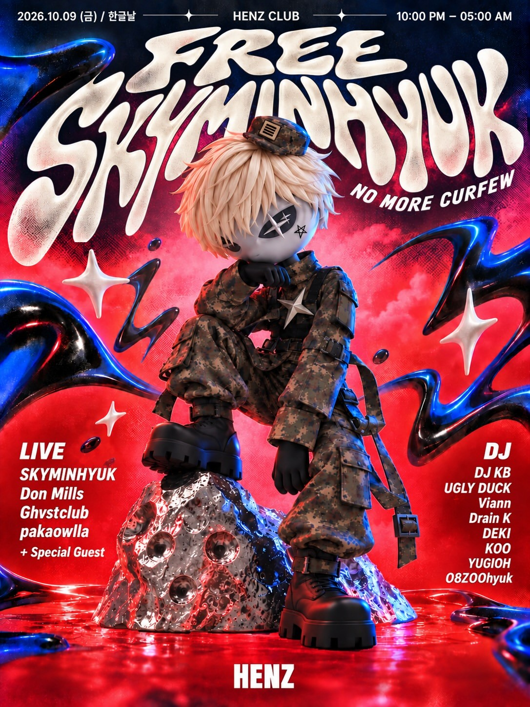
군 생활 중에도 뮤지션으로서의 삶을 놓지 않으셨네요. 얼마 전에는 첫 파티도 여셨죠? 사람이 정말 많이 왔던데, 소감이 어떠셨나요?
스카이민혁 제 인생 첫 파티였어요. 솔직히 여자친구가 있으니 클럽에 갈 이유를 못 느꼈고, 친구들이 공연하면 잠깐 보러 가는 정도였거든요. 공연하러 갈 때도 놀러간다기보다는 주인의식을 가지고 일하러 가는 느낌이었으니까. 그런데 군대에서 통제된 일과를 보내고, 퇴근하면 형이랑 작업하는 똑같은 생활을 반복하니까 클럽에 너무 가고 싶어지는 거예요(웃음). 고삐 풀고 놀고 싶은 마음이 커졌어요. 그런데 상근예비역이라 해도 엄연히 현역이기에 퇴근해도 군인 신분이어서 클럽에 갈 수 없었거든요. 주말에도 마찬가지였고요. 그래서 전역하면 파티를 열어서 거하게 놀아봐야겠다고 생각했죠.
그래서 파티 전날에는 너무 신나서 잠도 안 왔어요. 이번에 직접 호스트가 되면서 클럽 운영 방식이나 운영하시는 분들의 고충도 조금 배웠고요. 파티가 진행되다가 새벽 5시가 되면 불이 다 켜지잖아요. 한동안 맨날 6시에 출근하다가 6시에 퇴근했는데 아침 6시에 퇴근하니까 새롭더라고요(웃음).
앞으로의 멋진 활동도 기대하겠습니다. 오도마 님은 아내분께서 곧 출산을 앞두고 계시죠. 예비 아버지로서 지금 기분이 어떠신가요?
오도마 떨리고 긴장돼요. 빨리 이탈리아에 가고 싶어요(웃음). 요즘은 하루가 다르게 배가 불러오더라고요. 만삭이 가까워지는 걸 보면 마음을 형용할 수가 없어요. 다들 부모가 되는 그 감정을 경험해 보셨으면 좋겠어요. 저도 처음이라 말로 표현하기가 어렵네요.
아내분은 지금 해외에 계신 거죠?
오도마 네. 이탈리아에 혼자 있어요. 혼자 지내는 걸 생각하면 매일 마음이 뭉클해요. 저희는 만나서 이렇게 오래 떨어져 지낸 적이 한 번도 없거든요. 이번 음반 작업 때문에 처음으로 떨어져 지내고 있어요. 와이프도 저를 많이 그리워하고 저도 그렇죠. 동시에 너무 고마워요. 제가 하고자 하는 일을 지지하고 응원해 주니까요.
뮤직비디오나 다큐멘터리 촬영도 늘 함께했고 한국에 있을 때는 스케줄을 같이 다녔으니까 저희가 뭘 하는지 알고 있죠. 제가 믿고 맡길 수 있는 사람이기도 하고, 와이프도 그 일을 하고 싶어 해요. 멀리 떨어져 있지만 마음은 계속 하나인 것처럼 지내고 있어요. 이번 2MC CD 디자인도 와이프가 이탈리아에서 다 했어요.
평소에는 한국에 함께 계셨고, 이번 출산 준비 때문에 이탈리아로 가신 건가요?
오도마 네. 이 건으로 논의를 많이 했어요. 아이를 키우려면 온 마을이 도와야 한다는 말이 있잖아요. 와이프는 이탈리아에 대가족이 있고, 가족들 사이가 굉장히 가까워요. 출산 인프라는 한국이 훨씬 좋다고 생각하지만 우선 가족들과 지내는 게 모두에게도 좋은 경험이 될 것 같았어요. 출산 이후에는 한국에서 더 오래 지낼 예정이어서 가족들을 자주 못 보기도 하잖아요. 한국보다는 이탈리아 처가에서 현실적으로 더 많은 도움을 받을 수 있을 것 같아 이야기 끝에 이탈리아에서 출산하기로 했어요.
오도마님은 11월 20일 콘서트가 끝나면 바로 이탈리아로 가시는 건가요?
오도마 다음 날 아침에 갑니다(웃음). 출산하고 내년 2월에 같이 넘어올 예정이에요.
한 가족이 되어가는 과정의 대단원을 함께하러 가시는 거네요. 앨범도 잘되고, 아내분과 아이도 건강하게 만나서 멋진 2027년을 맞으셨으면 좋겠습니다.
오도마 저도 정말 그랬으면 좋겠어요. 사실 여름에 와이프가 수술을 했어요. 자궁경부무력증이라고, 쉽게 말하면 닫혀 있어야 할 곳이 힘이 풀려서 열리는 거예요. 그러면 아이가 다 자라기 전에 나올 수 있어서 조산이나 유산으로 이어질 수 있대요. 다행히 빨리 알게 돼서 수술을 잘 마쳤어요. 지금은 아이도 와이프도 건강합니다.
이번 앨범의 "FOMF"에서 말씀하신 수술이 이 이야기였군요. 정말 다행입니다. 곡을 듣고 아내분이 편찮으셨나 생각했거든요.
오도마 수술받을 때는 제가 집안일도 다 했어요. 평소에도 요리나 설거지는 하지만, 그때는 더욱 지극정성이었죠. 병실에서 24시간 간호했어요. 다른 일은 다 제쳐 두고 4박 5일 동안 있었죠. 음반 회의를 웬만하면 미룬 적이 없는데 그때는 다 미뤘어요. 와이프는 파스타를 먹어야 하는 사람이니까 집에 가서 파스타를 만들어 가져다주기도 하고요. 간호사분들이 남편은 직장 안 다니냐고 물을 정도였으니(웃음). 보통은 직장 때문에 그렇게 하기 어렵잖아요. 와이프 본인이 사업을 하고 있고, 저희 집도 거의 와이프의 자본으로 돌아가고 있어요. 저도 함께 하고 있는데 보통 온라인으로 하는 일이라 시간적으로 여유가 있는 편이거든요. 그래서 그렇게 보필할 수 있었어요. 평소에는 가사에 쓴 것처럼 와이프가 저희 화장도 해주고, 프로필 촬영 때는 사진작가와 별개로 사진을 많이 찍어서 B컷도 준비해 줬거든요.
그러면 이번 앨범의 비주얼에도 아내분께서 많이 도와주셨겠네요.
오도마 동시에 [선전기술 X] 때 함께했던 팀원들이 지금 미국에 있는데, 마침 저희가 비주얼 작업을 해야 할 때 다 한국으로 넘어왔어요. 그 시기에 맞춰 프로필도 빠르게 찍었죠. 메인 사진들은 비주얼을 봐주시는 작가님들과 작업했어요. 참고로 앨범 커버아트의 사다리는 그 자리에서 즉흥적으로 나온 아이디어예요.
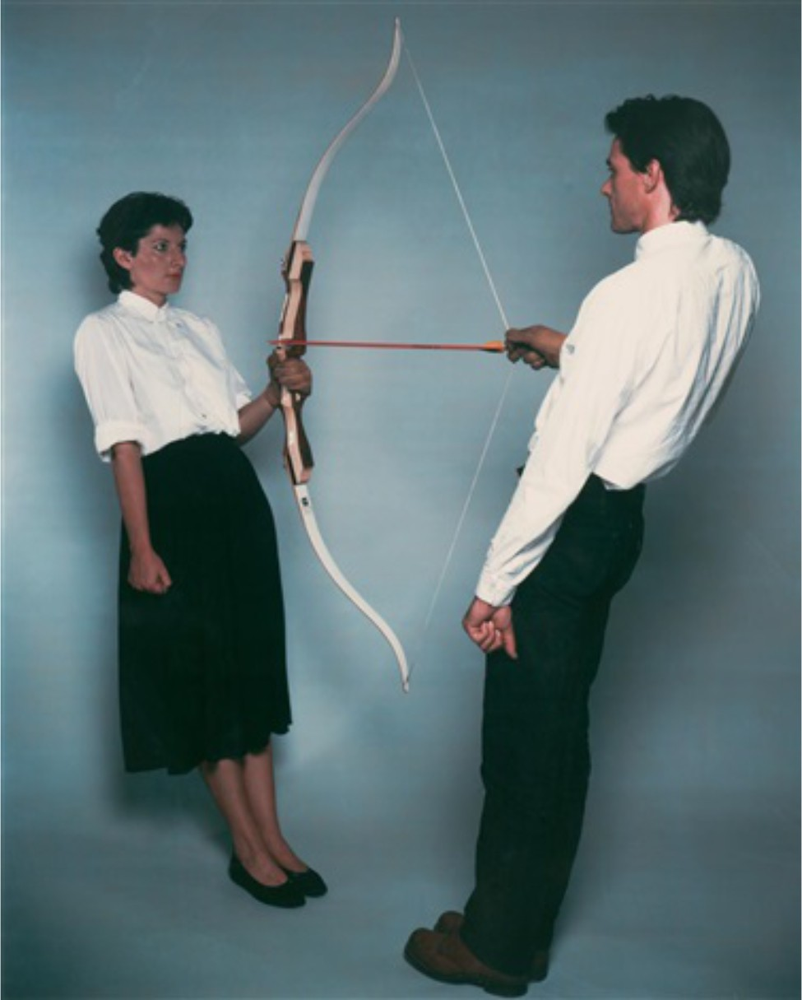
프로필을 어떻게 찍으면 좋을지 참고 이미지를 모으고 있었는데, 행위예술 작품 중에 한 사람은 활을 잡고 다른 사람은 화살을 잡고 있는 유명한 사진이 있거든요. 믿음과 신뢰에 관한 연출이에요. 한 사람이라도 놓으면 다른 사람이 죽을 수 있는 순간이죠.
그것처럼 저희도 사다리 위에서 둘이 손을 맞대고 있으면 한쪽이 손을 떼는 순간 떨어지잖아요. 앨범의 연출과도 비슷하다고 생각했어요. 와이프가 현장에 있는 사다리를 보고 그런 아이디어를 많이 내줬어요. 계속 함께해 왔으니까요. 최종적으로 사진을 찍고 편집해 준 건 메인 크레딧에도 올라 있는 현승이라는 친구예요.
스카이민혁 예술가이자 디자이너이기도 한 사라 누나가 많이 도와주셨던 기억이 나요. 시야도 넓고, 문화 전반적으로도 폭넓게 알고 계셔서 배우는 게 많아요. 그냥 지켜보시는 게 아니라 다양한 의견을 주시죠. 형이나 저는 그쪽을 잘 모르니 따라가기도 하고, 저희가 하고 싶은 것들도 말해보고요. 그러면서 나온 사다리 사진이 베스트 컷이었어요.
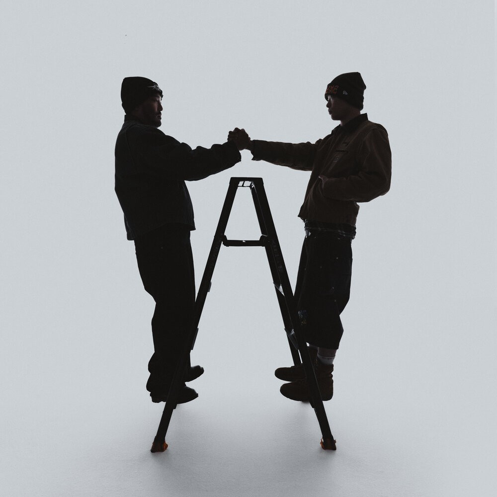
커버아트도 즉흥적으로 만들어졌군요.
오도마 사다리 소품이 없었다면 나올 수 없었겠죠. 사진을 찍어서 가짜인간 형들이나 팀원들에게 보여주니까 2MC니까 ‘M’을 형상화한 건지 묻더라고요. 그런 의도는 없었는데(웃음), 그렇게 봐주면 좋은 거고.
스카이민혁 사실 커버아트로 그래픽 디자인도 생각했고, 예전에 찍은 프로필 사진에서 나온 아이디어를 써볼까 하기도 했어요. 대안이 많았죠. 어떤 게 좋을지 상의하다가 사다리에서 서로를 지탱하는 장면이 이번 앨범을 관통하는 내용이니까 이걸로 가면 좋겠다고 했어요. 그렇다고 처음부터 깊게 의도하거나 꼭 이걸 해야 한다고 의견이 갈려서 길게 논의했던 것도 아니에요. 저희 둘 다 이게 딱이다 싶었던 거죠.
오도마 원래 이 사다리 사진은 부클릿에 넣을 용도로 생각했어요. 그런데 음반이 날것 그 자체잖아요. 커버도 그 취지에 맞아야 한다고 생각했어요. 그래서 있는 그대로의 사진을 골랐죠. 제게는 처음이기도 해요. 제 얼굴이 정면으로 드러난 사진을 커버로 쓴 음반이 거의 없거든요.
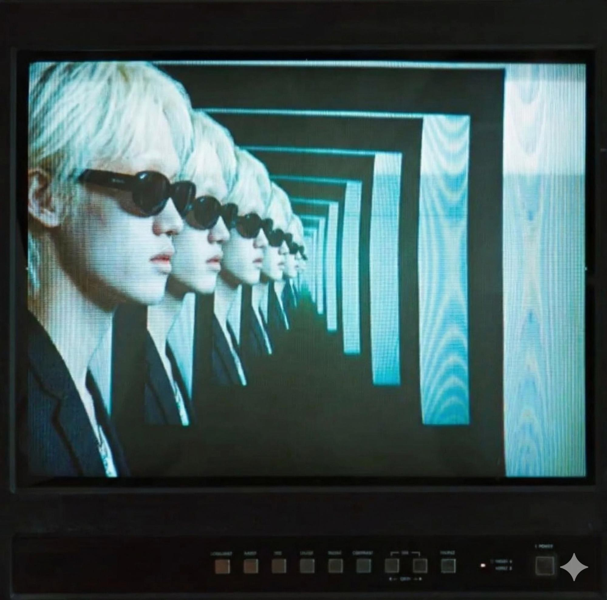
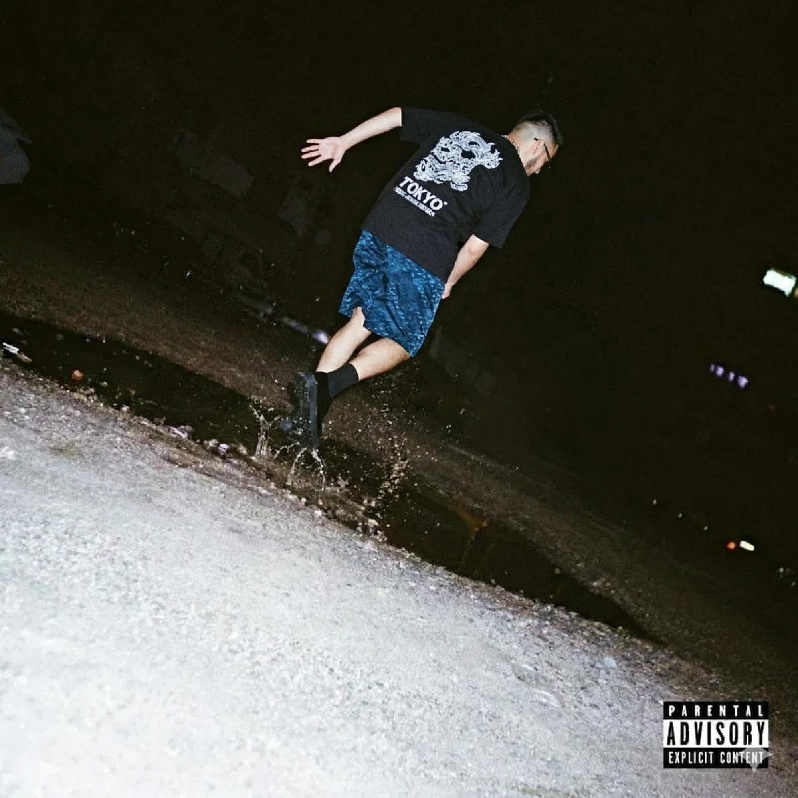
인스타그램에서 서로의 앨범 커버아트를 바꿔놓은 이미지도 공개하셨죠.
오도마 "코끼리는 생각하지 마"와 [선전기술 X]의 비주얼 작업을 함께했던 친구들과 소통하다 나온 아이디어예요. 크레딧에 프로젝트 코디네이터로 올라간 ESJAY라는 친구가 제안해 줬는데, 뮤직비디오 감독님들과 의견이나 콘셉트를 조율하고 뮤직비디오의 소품과 스태프도 전반적으로 관리해 준 친구예요. 저를 [해방] 커버에 합성하고 민혁이를 [선전기술 X] 커버에 합성해서, 둘이 협업한다는 걸 공개하면 좋은 마케팅이 되겠다고 했죠. 저희도 좋은 아이디어라고 생각해서 꽁꽁 묵혀뒀어요. 오랫동안 작업하면서도 함께한다는 티를 한 번도 내지 않았거든요. 아무도 모르게 숨겨뒀다가 한 번에 공개해서 더 효과가 있지 않았나 싶어요.
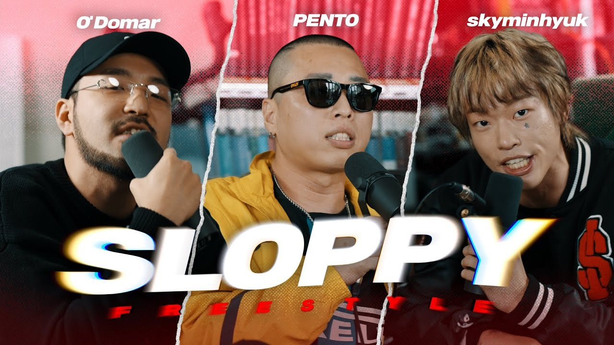
자연스럽게 2MC의 시작으로 넘어가 볼게요. 오도마 님이 매거진 계정으로 두 분의 합작 소식을 처음 알려주셨죠. 마침 스카이민혁 님도 전역 후 앨범을 낸다는 소식을 올리셨고요. 보내주신 트랙리스트가 스카이민혁 님이 공개한 것과 같아서 놀랐어요. 처음에는 접점이 없어 보이는 두 분이었는데, 어떻게 만나셨나요?
스카이민혁 제가 기억하는 첫 만남은 오도마 형, 펜토 형, 저 셋이서 함께한 슬라피 프리스타일 촬영이에요. 촬영 전후에 잠깐 얘기할 시간이 있었는데, 그때 형이 저한테 [해방]을 잘 들었다고 말씀해주셨어요. 마침 그때가 [선전기술 X]이 나오기 전이기도 해서 곧 나올 앨범을 먼저 들어봐 달라고도 해주셨고요. 들어보니 제 앨범과는 음악적인 방향도, 담긴 내용도 많이 다르더라고요. 저는 [밭]을 정말 좋게 들었기에 오도마 형이 다음에는 뭘 할지 팬으로서 기대하고 있었거든요. 그런데 너무 좋은 앨범을 가져오신 거예요. 과거 얘기를 잠깐 하자면, 저는 사운드클라우드에 올라오는 형의 믹스테이프나 오사마리 활동을 보면서 자란 세대예요. 형이 피처링한 곡의 비트만 올려주셨던 분도 있었는데, 이름이… 피자…
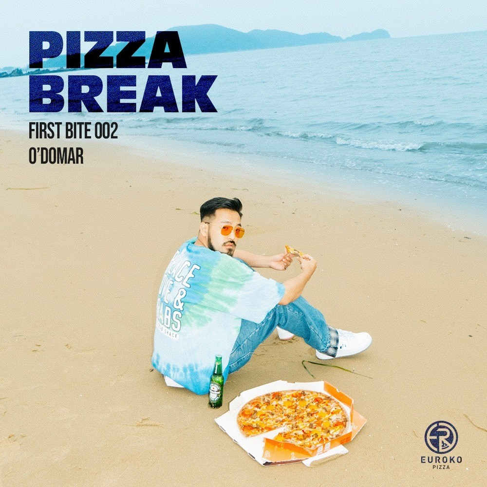
오도마 피자브레이크.
스카이민혁 맞아(웃음). 그분이 만든 앨범에 형이 피처링한 곡이 있었고, 인스트루멘틀도 올라와 있었어요. 저는 처음 음악을 시작할 때 기존 곡의 인스트루멘틀 비트에 랩을 올렸거든요.
오도마 이건 처음 듣는 얘기다.
스카이민혁 그때 랩잡 카페에 곡을 올리면 사람들이 피드백해 줬어요. 그런 걸 하면서 나도 오도마 같은 뮤지션이 돼야지 다짐했던 거죠.
오도마 과찬이십니다(웃음).
스카이민혁 그렇게 열심히 하다 보니 형이랑 같은 콘텐츠에 나갈 기회가 생긴거예요. 심지어 형이 제 앨범을 잘 들었다고 하고, 본인의 앨범도 미리 들려주니까 우상에게 어느 정도 인정받는 느낌이었어요. 이후에는 같이 시상식 후보에도 오르면서 나도 우상과 견줄 앨범을 냈다는 감상에 젖기도 했고요. 그러다 <랩:퍼블릭>에 나가게 됐어요. [해방]도 냈으니 다 씹어 먹을 수 있겠다고 생각했는데, 가면 미션에서 노윤하랑 붙어서 36 대 64로 졌거든요.
오도마 그 숫자를 기억하는 거야?
스카이민혁 너무 열받았거든요. 너무 잘하는 친구인 건 알겠는데, 나도 잘했어!
오도마 그러니까. 둘 다 잘했지.
스카이민혁 그때 오도마 형은 저를 선택해 줬던 기억이 있어요. 형이 다른 상대와 붙었을 때도 저는 형을 골랐고요. 형도 저를 좋아하고 저도 형을 좋아한다는 마음이 있어서 촬영 대기 시간에 많이 이야기를 나눴어요. 마침 그때 형이 이사 중이었던지라 사라 누나랑 같이 있어주고 싶은데 촬영에 왔다고 하시더라고요. 이런저런 얘기를 들으면서 남편으로서, 가장으로서도 멋있었다고 생각했어요. 저도 형처럼 되고 싶었고, 이 형이 저의 또 다른 롤모델이 된 거죠. 이후 형이 같이 음반을 만들어 보자고 연락해 주셔서 카페에서 이야기를 나눴어요. 당연히 해야겠다고 생각했죠.
오도마 님은 이때를 어떻게 기억하시나요?
오도마 평소에도 여러 음악을 많이 듣지만, 제 음반을 낼 때쯤에는 더 많이 들어요. [선전기술 X]을 낼 무렵 민혁이의 [해방]을 들었어요. 창작자가 다른 창작자의 작업을 들으면 ‘내 영향을 받았구나’, 혹은 ‘나와 비슷한 성향이구나’, 혹은 ‘나와 다른 사람이구나’ 이런 것들을 복합적으로 느낄 수 있다고 생각해요. 근데 [해방]을 들어보니까 좋은 의미로 제가 [밭]을 만들 때 느꼈던 감정선이 많이 느껴지는 거에요. 저도 혼자 모든 걸 만들어냈다기보다 한국 힙합에서 들려준 소리와 가사에 영향을 받은 키드잖아요. 민혁이도 그런 것들을 자기 것으로 체화했구나 싶었죠.
신기한 건 비슷한 얘기를 하는데 표현하는 방식은 전혀 달랐다는 거예요. 민혁이가 뿜어내는 감정과 제가 뿜어내는 감정은 달라요. 비슷한 얘기를 자기 방식으로 꺼내는 독창성이 반가웠어요. 그래서 제가 먼저 DM을 보냈죠. 앨범 너무 잘 들었고, 제 앨범도 들려주고 싶다고요. 앨범을 보내고 마침 슬라피 프리스타일도 함께하게 됐어요. 저는 프리스타일이니까 가볍게 해도 되겠다 싶어서 나갔는데, 민혁이 에너지가 엄청난 거예요.
그때 정말 장난 아니었죠(웃음).
오도마 그날 와이프한테 두 시간쯤 욕먹었어요. 뭐 하는 거냐고, 민혁이처럼 했어야 했다고(웃음). 그날부터 와이프가 민혁이 팬이 됐거든요. 그렇게 깊은 인상을 남기고 시간이 지나 <랩:퍼블릭>에서도 만났어요. 방송이다보니 대기 시간이 길잖아요. 그때 민혁이랑 이야기를 많이 나눴는데, 민혁이도 다음 작업의 방향성을 고민하고 있었어요. 저도 [밭]이 잘되고 관심을 받았을 때 동료들에게 조언을 많이 들었거든요. 진정성 있는 모습은 충분히 보여줬으니까 이제 랩을 정말 잘하는 음반을 만들라는 얘기들?
그런데 저는 음악 하면서 랩보다 진정성을 더 많이 신경썼던 적이 없어요. 그런 사람이 어디 있어요. 모든 걸 다 챙기고 싶지. 제삼자가 눈으로 봤을 때 나의 부족한 부분을 채우라는 뜻이겠지만, 제게는 책임 없는 조언처럼 느껴졌어요. 훈수두는 건 쉽잖아요. 그분들이 조언한 게 잘못이라기보다, 제가 그걸 너무 의식한 게 잘못이었다는 생각이 들더라고요. 오히려 헷갈렸거든요. 그래서 민혁이에게도 남의 말만 믿지 말고 너 하고 싶은 대로 하라고 조언했어요. 내면의 얘기를 담았으니 이제 다른 이야기를 하고 싶다면 그렇게 하라고요. 사람들이 너에게 이런저런 기대를 하는 건 그 사람들 생각일 뿐이니 마음이 움직이는 쪽으로 했으면 좋겠다고 했죠.
그리고 촬영하고 집에 오면 와이프가 어린아이한테 학교에서 누구랑 친하냐고 묻는 것처럼 오늘 누구랑 많이 얘기했는지 물었어요. 민혁이랑 얘기했다고 하니까 그 친구랑 앨범 하나 해봐도 괜찮을 것 같다고 툭 던지곤 했죠. 그 말 듣고 저도 고민 많이했어요. 방송 끝나면 뭔가 허해지거든요. 할 때는 미친 듯이 바쁜데 끝나면 인생이 끝난 것처럼 스케줄이 뻥 비니까(웃음). 그때 제 새 음반을 만들지, 다른 프로젝트에 도전할지 기로에 있었어요. 가짜인간 형들도 새 음반에는 찬성했지만 기존 방식을 그대로 답습하는 건 원하지 않았고요. 형들이 총괄하고 제가 주연이 되어 음반을 이끌어나가는 방식으로는 할 수 있는 최선을 다한 상태였죠. 새로운 그림이 필요했어요.
그래서 와이프의 조언대로 민혁이에게 다짜고짜 전화를 했죠. 엄청난 계획이 있는 것처럼 ‘같이 음반을 해보는 건 어떻겠냐, 만나서 얘기하자’고. 그 후에 카페에서 만났는데 사실 본심은 어떻게 설득해야 할지 진땀 뺐어요. 사실 별다른 계획이 없었거든요(웃음).
스카이민혁 님은 오도마 님의 제안에 기세로 설득되신 거네요(웃음).
스카이민혁 저한테는 형께서 같이 작업을 하자고 하는 것 자체가 영광이었어요. 아니 진짜 똥꼬 빨려고 하는 말이 아니라(웃음), 저는 형의 디스코그래피를 따라가려야 따라갈 수 없다고 느꼈거든요. 무조건 배울 게 있을 텐데 같이 할 수 있다면 거절할 이유가 없죠. 그런데 바로 확답하면 진정성이 떨어져 보일 수도 있잖아요. 형이 저를 날것이고 격양된 사람, 무대와 현실이 비슷한 사람으로 보고 계셨다면 진지한 면도 보여드려야겠다고 생각했어요. 고민하고 ‘형, 같이 하겠습니다’ 하는 것과 그 자리에서 ‘너무 좋은데요! 같이 해요!’ 하는 건 다르잖아요. ‘이 새끼는 그냥 다 좋다고 하는 거 아니야?’ 생각하실 수도 있고요(웃음). 거기다 지금은 사실상 인디펜던트지만 당시에는 회사에 소속되어 있다보니 회사와도 상의해야 했죠. 이런저런 과정을 거쳤지만 사실 속으로는 엄청 설레고 들떠 있었어요.
그렇게 두 분의 생각이 맞물려 2MC가 만들어졌군요. 그런데 스카이민혁 님의 복무 기간을 감안해도 실제 제작 기간이 꽤 길어졌어요.
오도마 처음에는 민혁이 입대를 고려하지 않았고, 대여섯 곡짜리 짧은 EP를 만들려 했어요. 제 기억에 처음 만났던 때가 2024년 10월~11월쯤이었으니 빠르게 작업해서 2025년 6월 안에 EP 하나를 내자고 생각한거죠. 근데 아무리 회의를 가져도 실질적으로 완성되는 곡이 그닥 없었어요. 데모는 많이 만들었는데 거기서 더 진전되지 않았거든요. 당시 민혁이는 [MAD] 작업도 병행하고 있었고, 3월에 입대한다는 소식까지 들리니 앨범 작업 자체가 기로에 놓였어요. 민혁이 입대 후 제가 음반을 어찌어찌 완성해서 낼 수는 있지만 실질적인 활동을 못 하잖아요. 그러면 차라리 기간을 좀 더 두고 곡 수를 늘려보자는 생각을 한거죠. 다행히 민혁이가 가기 전에도 "프레임"과 "고정 수입"의 컨셉은 정해져 있었어요.
이후 더디더라도 꾸준히 작업했고, 2025년 9월 이후부터 속도가 많이 붙었어요. 원래 여덟 곡 정도로 생각한 게 열 곡으로 늘어났고요. 발매일자도 딱히 의도한 건 아니었는데 민혁이 전역에 맞춰 완성되더라고요.
처음 계획과 최종 결과물 사이에서 이어진 부분도, 달라진 부분도 있었겠네요.
스카이민혁 처음 작업을 시작했을 때 목표는 2025년 여름 즈음에 앨범을 내는 거였어요. 둘 다 진지한 이야기를 담은 앨범을 냈으니 가볍게 즐길 수 있는 음악을 담아보려 했죠. 파티나 카페에서도 틀 수 있고, 한 곡씩 들어도 재밌는 음악들. 마침 저도 그런 음반을 만들고 싶었거든요. 그런데 신나는 곡을 아무리 계속 만들어봐도 몇 퍼센트 부족한 느낌이 드는 거예요. 둘이 만나서 이걸 내는 게 무슨 의미지? 혼자서도 만들 수 있는 곡 아닌가? 싶었거든요. 저는 형에게 배우려고 온 마음이 커서 제 의견도 내되 형의 얘기를 잘 따르고 싶었어요. 동시에 [MAD]도 준비하면서 두 마리 토끼를 잡으려고 했죠. 계산적으로 보면 [MAD]를 내고 바로 2MC의 앨범이 나오는 그림이었어요.
오도마 완전 허슬러지.
스카이민혁 [MAD]도 정규까지는 아니어도 일곱여덟 곡으로 채워서 내고 싶었는데, 당시 입영 통지서가 나온 거예요. 사실 저는 입대를 더 미룰 생각이었어요. 2MC랑 [MAD]가 잘되고 빈지노처럼 멋지게 군대가자는 계획이었는데 갑자기 나오니까 당황했죠(웃음). 하지만 현역 신분으로 출퇴근할 수 있는 건 너무 큰 혜택이잖아요. 그래도 형은 일하면서 음반 작업하는 것도 힘든데 군인 신분으로 작업하려면 더 힘들 거라고 이야기를 주시더라고요. 저는 해야 했어요. 이미 세 달 정도를 투자한 작품인데다 출퇴근하면서 음악을 만들 수 있다 해도 형이랑 안 하면 혼자서 1년 반 동안 제대로 뭔가를 만들 수 있을까? 생각해보면 저는 혼자서 못 할 것 같았거든요. 형이 거북이고 제가 토끼라면, 형 등에 타서 용궁으로 가야겠다고 생각했죠.
오도마 너무 좋은 표현인데?(웃음)
스카이민혁 신세계로 가고 싶었어요. 저는 여전히 부족한 게 많다고 생각하거든요. 형이 가진 음악적 디테일이나 여러 장치를 넣는 방법은 배워야 알 수 있는 건데, 형이랑 음반을 만들면서 이런 것들을 배울 수 있다니 무조건 해야 했죠. 계획은 많이 틀어졌지만 덕분에 정규앨범이 됐어요. 전역하면서 비축한 에너지도 폭발시킬 수 있었고요. 그동안 형 개인적인 일도 잘 풀리고 아이 소식도 생기면서 새로운 이야기가 만들어졌죠. 계획은 틀어졌어도 좋은 방향으로 바뀐 것 같아요.
이것도 하나의 “아포페니아”네요(웃음). 듀오로 활동하기로 결정하면서 활동명도 고민하셨을 텐데, 앨범 타이틀과 팀 이름을 모두 [2MC]로 정하셨어요.
오도마 처음 기획할 때 Run the Jewels나 Outkast를 많이 참고했어요. 단발성 프로젝트로 끝내고 싶지 않았거든요. Clipse에는 Pusha T와 Malice가 있고, Outkast에는 Big Boi와 André 3000이 있잖아요. Run the Jewels의 Killer Mike도 개인 음반으로 그래미를 받을 만큼 훌륭한 아티스트고요. 팀에 소속되어 있지만 각자 솔로 아티스트이기도 한 거죠.
저희도 각자 음반에서 할 수 있는 것과 2MC로 할 수 있는 게 다르다고 생각했어요. 개인작에서는 자전적인 얘기를 자유롭게 풀 수 있지만, 팀은 머리도 둘이고 경험도 둘이잖아요. 하나의 촘촘한 자전적 이야기로 엮기는 어렵죠. 그런 팀들의 음악을 들어보면 훅을 비롯한 여러가지 부분에서 팀 이름이나 슬로건을 많이 내세워요. 저희도 개인 음반에서 보여준 무게를 덜고 새로운 이미지를 보여주고 싶기도 했고요. 팀 이름을 음반에서 계속 내세우면 하나의 브랜딩이 될 수 있겠다고 생각했죠.
이름을 정하는 데는 오래 걸렸어요. 민혁이는 문신이 있고 저는 수염이 있으니 둘 다 얄쌍한 스타일은 아니라 처음에는 브루탈 보이즈 같은 것도 생각했고(웃음). 디즈니나 카툰처럼 캐릭터화하는 방법도 생각했고요. 여러 아이디어가 나쁘지는 않았는데 완벽하다는 느낌이 없었어요. 억지로 짜맞춘 것 같았죠. 그런데 2MC는 그런 느낌이 없고 아주 단순했어요. 처음에는 이것보다 더 좋은 이름이 없을까 고민했지만 결국 2MC가 됐습니다.
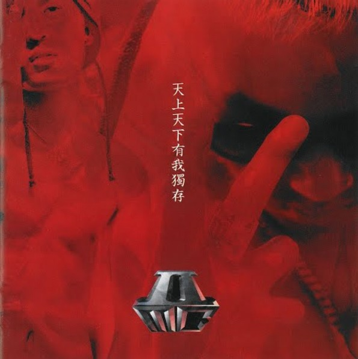
1990년대 후반 리오 케이코아 님이 스티븐 님과 함께 2MC로 활동하고 앨범도 내셨잖아요. 이름을 정할 때 그 팀을 알고 계셨나요?
스카이민혁 솔직히 이름을 지을 당시에는 전혀 몰랐어요. 솔직히 앞서 나온 브루탈 보이즈 같은 건 별로였거든요(웃음). 서로의 이름을 줄임말로 잇자는 얘기도 있었는데, 저는 알파벳 약자로 부르는 것도 별로였어요. 제 이름이 스카이민혁이다 보니.
오도마 둘 다 너무 한국적인 래퍼예요. 음악도 한국적이고요. 영어 이름을 붙이면 저희 성향과 잘 안 어울리더라고요.
스카이민혁 근데 2MC는 완벽했어요. 저희 둘이야말로 MC니까요. 저는 어릴 때부터 언더그라운드 래퍼를 동경했는데 이름부터 너무 길거리 래퍼들 같고 언더그라운드스럽잖아요. 이번 앨범을 만드는 의도가 대중을 사로잡고 싶은 거였으니 이름과 상반되는 면은 있지만, 누가 봐도 저희는 MC니까 좋았죠.
이후에 시간이 흐르고 나서 형이 전래동화 들려주듯 2MC라는 그룹이 있었다는 걸 말씀주셨어요. 리오 케이코아 선배님 아시냐고. 두 선배님들이 만든 음악을 들어보는데 꽂히는 노랫말이 있더라고요. 같이 가사를 쓰고 선배님들의 활동을 더 찾아보면서 리스펙트도 생겼죠. 그래서 저희 앨범에 리오 케이코아 형님 목소리가 나레이션으로 들어가면 의미가 더욱 살고, 이분들의 이름을 잇는다면 하나의 족보가 만들어질 수 있겠다고 생각했어요. 저희도 나중에 쉰 살쯤 돼서 음악을 그만둘 때, 2MC라는 이름을 다름 MC에게 물려줄 수 있지 않을까 하는 마음도 있었고요. 형이 주는 아이디어에 덥석 탑승했죠. 형이 기차 운전을 잘하시니까 뒤에서 뱃살 붙잡고(웃음).
내레이션은 리오 케이코아님께 직접 연락해서 부탁하셨나요?
오도마 네. 처음에는 연락을 안 보시길래 안 되나 보다 했어요. 그래서 제가 먼저 파워레인저 같은 느낌으로 내레이션을 짜서 녹음해 둔 상태였죠. 그런데 거의 음반이 끝나갈 때 즈음 DM을 보내주시더라고요. 바로 연락해서 어떤 음반을 만들고 있는지 설명드리고 조언도 구했어요. 감사하게도 음반을 너무 좋아해 주시면서 흔쾌히 도와주셨죠.
나중에 알았는데, 선대 2MC 선배님들도 메인스트림을 두드려보자는 생각으로 팀을 만드셨대요. 1999년에 [Attention!]이라는 음반을 발표했는데, 뮤직비디오도 당시 기준으로 파격적이고 준비를 많이 한 작업이었어요. 가사도 당시 사회를 거침없이 다뤘고요. 저희 둘도 더 폭넓은 대중에게 다가가는 게 큰 목적이었잖아요. 처음부터 알고 시작한 건 아니지만 이전 팀의 의미를 잘 이어받지 않았나 싶어요. 리오 형에게 다시 한번 감사드립니다.
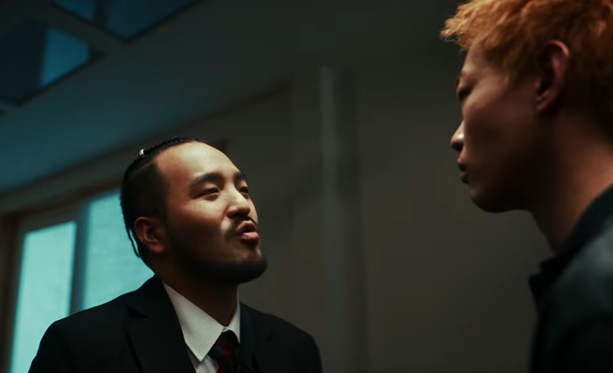
이제 본격적으로 트랙 바이 트랙으로 이야기를 해볼까 해요. 첫 트랙은 "프레임"입니다. 앨범 초반에는 두 분이 만나 음악을 어떻게 만들지 티격태격하잖아요. 그리고 각자에게 씌워진 프레임을 깨야 한다는 이야기가 등장하고요.
스카이민혁 저는 앨범에서 첫 트랙이 제일 중요하다고 생각해요. 저도 앨범 들을 때 첫 곡이 별로면 두 번째까지만 들어보고, 거기에도 임팩트가 없으면 끝까지 들을 용기가 필요하거든요. 앨범을 듣는 사람들을 수십분 동안 끌고 가려면 첫 트랙의 힘이 중요해요. 게다가 사람들이 듀오 음반을 무조건 반기지는 않는다고 생각해요. 오도마 형의 개인 앨범을 좋아하는 분들과 제 앨범을 좋아하는 분들이 하나가 되어주길 기대하지만, 취향이 다를 수 있잖아요. 그 상황에서 저희가 서로 싸우면서 시작하는 게 잘 맞는다고 생각했어요.
팬들이 ‘털복숭이랑 꽥꽥이가 만나서 무슨 음반을 하겠다는 거야’ 하고 눈살을 찌푸릴 때, 저희가 먼저 선빵쳐서 공격적으로 ‘그래, 우리 잘 안 맞아. 그래도 한번 해보려고’ 하는 거죠.
오도마 보통 듀오 음반을 보면 서로의 만남을 운명처럼 그리는 경우가 많잖아요. 둘이 함께해야 하는 이유가 충분히 있는 것처럼 만드는 거죠. 근데 저희는 그 클리셰를 비틀어 보고 싶었어요. 우리 상황을 좀 멀리서 바라보고 싶었어요. 실제로 음악가들이 만나면 어떻게 음반을 만들까? 그걸 극적으로 풀어낸 거죠. 가사를 쓸 때 민혁이에게 ‘나를 디스해라. 더 강하게 공격해라’고 많이 요구했어요. 저도 더 공격적으로 얘기하려 했고요. 이 과정을 통해 이 곡과 음반으로 하고 싶은 게 뭔지 생각했을 때, 새로운 이미지로 확장하는 거였어요.
스카이민혁도 새로운 모습을 가져가고, 저도 기존의 틀을 깨는 거죠. 그래야 다음 단계가 있다고 생각했거든요. 오도마라는 이름으로 할 수 있는 건 지금까지 다 해봤다는 생각도 있었어요. 새로운 면을 찾으면 앞으로 더 좋은 모습을 만들어갈 수 있겠죠. 민혁이에게도 필요한 부분이 있었고, 그걸 생각하다 보니 자연스럽게 이런 연출이 나왔어요.
두 분에게 붙은 프레임은 각각 [해방]과 [선전기술 X]인 셈이네요. [해방]은 스카이민혁 님의 전환점이 된 작품이지만, 반대로 족쇄가 된 면도 있었던 것 같아요. 구체적으로 어떤 고민이 있었나요?
스카이민혁 잘되는 상황에 있을 때는 내가 얼마나 잘 나가고 있는지 느끼기 어려운 것 같아요. 어렵게 앨범을 냈으니 당연히 받아야 할 인정을 이제 조금 받는구나, 그 정도였죠. 그런데 [해방] 활동이 길어졌어요. 처음에 커뮤니티 반응이 뜨거워지고, 다른 래퍼 형님들도 지지해 주시고, 반응이 오래 이어지면서 딩고 촬영이나 단독 콘서트, 인터뷰가 생겼어요. 다음 앨범을 작업하기보다 그 일들을 해내야 했죠. 랩퍼블릭까지 끝나니 어느새 2024년 9~10월이 된 거에요. 예전에는 팬들이 “[그랜드라인2] 잘 들었어요”나 “<쇼미더머니 9> 잘 봤어요” 라고 말씀 주셨는데, 이제는 ‘[해방] 잘 들었어요’라고 하셔요. 그런데 2024년이 거의 끝날 때까지도 그 얘기뿐이었죠. 다음에는 뭘 해봐라 하는 얘기도 많이 들었는데, 정작 저는 다음 앨범을 생각할 겨를이 없었어요. [해방]에서 제 열등한 부분부터 욕심까지 다 쏟아냈거든요. 더 쓸 얘기가 없었어요.
그런데 사람들이 너의 이야기를 다 썼으니 이제 세상으로 뻗어나가야 한다. 사람들이 공감할 수 있는 가사를 써야 한다. 네가 직접 겪은 얘기는 여기서 마무리해야 한다고 하더라고요. 한 번도 해보지 않은 작법이니까 청천벽력처럼 느껴졌어요. 미칠 것 같았죠. 그래서 [MAD]를 작업해야겠다고 생각했어요. [해방]으로부터 해방되어야 하는 역설적인 상황을 써보자고요. 사람들이 그 앨범을 어떻게 보는지는 이제 중요하지 않고, 저는 다음으로 가야 한다고 생각했어요. 그때 오도마 형이 같이 팀을 해보자고 제안한 거죠. 작업하면서 "서울은 가르쳐줬지" 같은 곡을 만들 때도 제 생각만 쓰기보다 세상을 관찰하는 시선으로 가사를 써보자는 쪽으로 바뀌었고요.
[해방]을 잊게 할 새 앨범을 만들려고 고군분투했는데, 지금도 사람들은 공연에서 [해방] 수록곡을 듣고 싶어 하세요. 오도마 형에게도 [밭] 수록곡 공연하는기 계속 묻는 걸 보면 저희는 아직 갈 길이 멀죠. 계속 숙제을 안고 가는 거예요.
이번 2MC 앨범은 새로운 도전인 셈이네요. [해방]으로부터 해방되려는 발버둥이 역설적이면서도 인상적이고요.
스카이민혁 이번 앨범으로 확실히 변화했다는 걸 보여주고 싶었고, 아직 진행 중인 것 같아요. 이제는 2MC의 스카이민혁이지 [해방]의 스카이민혁은 지나갔어요. 그건 어린 시절의 저고, 지금은 한 단계 더 성숙했다는 걸 담고 싶었고 그렇게 보이길 원해요.
오도마 제가 하지 못했던 모습이에요. 저는 [밭]을 내고 그 다음 스텝을 밟으려는 게 너무 어려웠어요. 뭘 만들어도 이미 다 얘기한 것 같았거든요. 다음 발걸음을 떼지 못하다 결국 만든 게 [선전기술 X]에요. 그래서 애착도 깊고, 제 나름의 작법을 확장한 음반이죠.
[밭]이 힙합씬을 관찰했다면, [선전기술 X]은 세상을 관찰한 음반이에요. 시야가 넓어진 건 음악 때문만이 아니라 삶이 확장됐기 때문이기도 해요. 결혼도 하고 싶고 집도 사고 싶고, 보편적인 삶에 욕심이 생겼어요. 그런 것과 거리를 두고 사는 음악가도 많지만, 저는 가정을 만들고 싶었죠. 음악가 오도마와 인간 전화평의 자아가 충돌하는 과정에서 만든 앨범이다 보니 당시 관심 있던 시사, 정치, 사회적인 내용을 담았어요. 저와 비슷한 사람이 많겠지 생각했는데 그렇지 않더라고요. ‘평소에도 그런 얘기를 많이 하는데 음악을 들으면서까지 해야 하나?’라는 반응은 예상하지 못했어요. 제가 좋게 들으니 다른 사람도 좋아하겠지 생각한 건 좁은 시야였죠. 지금도 음반에 대한 자부심은 있어요. 성취감도 있고 잊지 못할 경험이에요. 다만 인정할 건 인정해야 하잖아요. 현실적으로 흔히 말하는 성공과 맞닿아 있지는 않았으니까 쓰라렸죠. 그때는 제가 미성숙했던 것 같아요.
[밭]을 냈을 때는 음반으로 잘돼본 적이 없어서 반응이 없어도 크게 중요하지 않았어요. 늘 그랬으니까요. 그런데 갑자기 반응이 폭발적으로 늘면서 잘됐죠. 그래서 좋은 음악을 내면 다 그렇게 되는 줄 알았어요. 순진했던 거예요. [선전기술 X]을 낼 때만 해도 "I am 신뢰"에 쓴 것처럼, 비슷한 시기 다른 래퍼들의 앨범을 듣고 ‘잘 냈는데 아쉽네. 이제 [선전기술 X] 나오니까 큰일 났다’ 하고 저희끼리 농담했어요. 그런데 막상 내니 제가 개박살 난 거죠(웃음). 듣고 별로라고 하는 건 받아들일 수 있는데 너무 어려우니까 안 들을래, 는 전혀 예상하지 못했어요. 몇 년 사이 달라진 흐름에 편승하지 못한 거죠. 그런 반응이 와도 계획을 촘촘히 세워뒀다면 지금처럼 나아갈 수 있었을 텐데 그러지 못했어요. 반응 하나하나에 무너졌어요. 정말 음악을 그만둘 생각도 했고요.
그래도 죽으라는 법은 없다고, 시간이 지나니 멋진 친구와 음반을 만들 기회가 생겼어요. 또 좋은 음반을 낼 수 있어 감사해요. 그 경험 덕분에 이번에는 어떤 반응이 오더라도 계획한 대로 나아가자는 생각이 더 확실해졌어요.
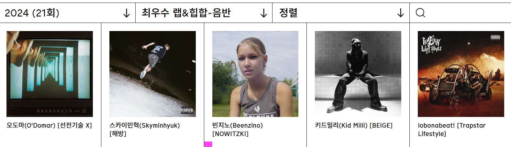
두 작품 모두 한국대중음악상 힙합 부문 후보에 올랐고, [선전기술 X]은 평단에서도 긍정적인 평가를 받았잖아요. 그런데 작품의 완성도와 청자의 반응, 접근성 사이에는 차이가 있죠. 이번 앨범을 내기 전에 올리신 글도 그런 고민으로 읽혔어요. 그 이야기가 이번 앨범 초반에도 담겼고요. "고정수입"은 전반부에서 래퍼의 수입을 이야기하다가, 후반부에서 어떻게 앨범을 주목받게 할지 고민하고 피처링 후보를 이야기하는 구성이잖아요.
스카이민혁 래퍼들은 자기가 돈을 많이 번다는 걸 스웨깅하잖아요. 사람들도 스카이민혁이 [해방]을 냈으니 많이 벌었겠구나~ 생각해요. 그냥 추측인지, 아니면 어떤 지표를 보고 하는 말인지 모르겠지만 그 말들이 실제 제 삶과는 차이가 있었죠. 군 월급은 적은데 집 월세와 작업실 월세 내고, 여자친구랑 같이 살면서 밥도 먹고 생활비도 써야 하니 돈이 너무 없는 거예요. 지금 제 삶을 과감하게 풀어내는 벌스를 써야겠다고 생각했어요. 16마디를 써갔더니 형이 ‘좋다. 내가 잘 요리해 볼게’ 하면서 여덟 마디씩 나누고, 형 벌스도 여덟 마디씩 넣었어요. 벌스가 총 32마디가 됐으니 훅도 흡입력 있게 만들어야 하잖아요. 형이 ‘고정적으로, 고정적으로’를 써오셨는데 너무 좋았어요. 떼창이 나오겠다 싶었죠. 형이 앞에 프리훅처럼 네 마디를 만들어보라고 해서 제가 작업했고요.
그런데 그대로 끝내면 ‘그래서 억을 어떻게 벌 건데?’ 궁금증이 뒤따라오잖아요. 다음 곡에서 대중성을 고려한 저희의 비장의 무기를 통해 ‘이렇게 할 거야’ 제시하려고 했어요. 왜 그런 음악을 내는지도 얘기하고 싶었죠. 저희는 산이 형님의 "아는 사람 얘기"나 버벌진트 형님의 "좋아보여"를 두고 사람들이 논쟁하던 시기를 겪은 세대잖아요. 그런 음악을 하는 데 대한 저희 나름의 생각을 팬들에게 설명하는 것도 중요한 장치라고 봤어요. 돈은 없고 음악으로 돈을 벌기는 어렵지만, 벌고 싶으니 이렇게 해보겠다는 흐름이었어요. 피처링이 그 첫 출발점이죠. 대중적인 음악을 만들려면 그걸 잘하는 아티스트와 함께해야 잘되지 않겠냐는 생각을 안 할 수 없잖아요. 형이랑 작업실에서 가사를 쓰고 고치면서 ‘대박 피처링, 형 누구 하지?’로 시작하게 됐어요. 고정 수입을 얻어야 하니까요.
후반부 이야기도 실제로 나눴던 대화인가요?
오도마 다 나눈 얘기예요. 있는 그대로 담았어요(웃음).
연락한 순서도 그대로인가요?
오도마 그건 연출(웃음). 그래도 실제로 많은 분들께 연락드렸어요. 그걸 그대로 네임드랍하면 거기에 언급된 분들이 곤란해하실 수 있잖아요. 그런데 이걸 아예 멀리서, 켄드릭 라마부터 시작하면 코믹한 요소로 바뀌어요. 그래서 그렇게 기획했어요. 빅나티 님도 최종 음반을 듣고 재미있어 하셨어요. ‘RM한테 보내봤어요? 보냈으면 해줬을 것 같은데’라고 하실 정도로요(웃음).
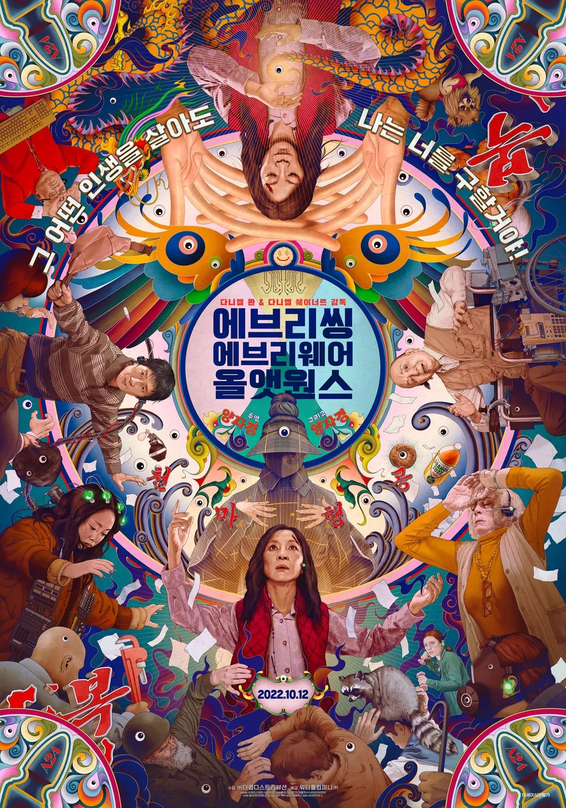
다음 곡 "에에올"은 앨범의 중심이라고 할 수 있겠죠. <에브리씽 에브리웨어 올 앳 원스>에서 가져온 제목이 맞나요?
스카이민혁 처음에는 앨범과 관계없이 형이 이 영화 재밌다고 추천해서 한 번 봤어요. 사람들이 늘 갖고 있는 마음에 관한 얘기잖아요. 내가 가지지 못한 것만 갖춰지면 특별한 삶을 살 수 있을 것 같은데, 정작 그 사람은 평범한 사람이 가진 가정이나 사랑을 원하고요. 자유롭지는 않아도 책임질 사람이 있고, 서로 힘내며 살아가면 외롭지 않으니까요. 형 가사와 이야기를 듣고 제가 가사를 썼는데, 쓰고 보니 영화와 닮은 부분이 많았죠. 제목도 고민해서 지은게 아니라 그냥 녹음 파일 제목이 이미 “에에올”이었어요. 늘 ‘3번 트랙 괜찮다’가 아니라 ‘에에올 좋다’고 이야기했죠. 저희는 그런 식으로 제목을 붙였어요.
오도마 저는 이 영화를 와이프랑 영화관에서 봤어요. "코끼리는 생각하지 마"의 첫 벌스도 그 영화로부터 나왔고요. 작업할 때 영화가 나왔는데, 용서하고 사랑하자는 얘기를 이렇게 재밌게 할 수 있구나 싶었죠. 집에서도 자주 보는 영화예요. 대중에게 가볍게 다가갈 수 있는 가장 좋은 키워드는 사랑이라고 생각했어요. 그런데 제가 잘 다룰 수 있는 분야도 아닌데 갑자기 사랑 노래를 할 수는 없잖아요. 그래서 제가 말할 수 있는 사랑이 뭘까 생각해 보니 잘못을 고백하고, 용서받고, 사랑받고 싶은 마음이었어요. 누구나 실수하고 잘못하잖아요. 그걸 솔직히 얘기하고, 늘 부족하고 거짓말하는 것 같아도 오늘은 믿어줄 수 있느냐고 묻는 거죠. 사람은 그 믿음으로 살아간다고 생각해요. 영화와도 맞닿아 있어서 자연스럽게 제목이 붙었어요.
그래서 뮤직비디오에서도 영화적인 연출을 많이 썼어요. 앞으로 나올 영상들에도 연기와 연출이 많고, 앨범에서도 단순히 랩을 잘하는 것뿐 아니라 극적인 장면을 많이 만들었죠.
빅나티 님은 연락을 드린 뒤 흔쾌히 참여하셨나요?
오도마 정말 흔쾌히요. 언제까지 하면 되냐고 여쭈셔서 일정을 말씀드리니 일주일쯤 뒤 갑자기 파일이 왔어요. 들어보고 너무 좋다고 하니 스템 파일을 보내주셨고요. 후루룩 진행됐어요.
입대를 앞두고 계셔서 세세하게 묻고 따지기보다 빠르게 해주신 것 같아요. 사실 [선전기술 X] 때도 피처링을 한 번 부탁드린 적이 있는데 그때는 연락이 이어지지 않다가 발매 이후에 연락을 주셨어요. 음반은 너무 좋게 들었는데 자신이 참여해서 할 수 있는 말이 많지 않을 것 같아 쉽게 답하지 못했다고요. 다음에 좀 더 가볍게 하고 싶은 얘기가 있으면 연락해 달라고 하셨어요. 이번에 그 찬스를 쓴 거죠(웃음).
빅나티 님의 짧은 벌스는 두 분의 앨범을 향한 샤라웃이기도 하잖아요.
오도마 저도 그게 신기했어요. 원래는 그 멜로디를 훅으로 쓸까도 했는데, 굉장히 개인적인 이야기를 건네주셔서 브리지로 빠지는 게 더 좋겠더라고요. 저희가 하나의 이야기를 만들어 놓은 상태에서 갑자기 다른 차원으로 넘어가는 느낌이에요. 다른 사람의 독자적인 시점이 들어오니까요. 다중우주를 다룬 영화의 제목이 곡 제목과도 잘 맞는다고 생각했어요.
개인적으로 궁금했는데 훅 보컬은 누구인가요?
오도마 크레딧에 코러스로 올라간 가짜인간의 건배 형이에요. 처음에는 가이드로 녹음하고 그걸 바탕으로 여러 분을 섭외하려고 했는데 잘 안 돼서 프로듀서 형들에게 부탁했죠. 건배 형은 아직 본인이 보컬리스트로 준비됐다고 생각하지 않는 것 같아요. 제가 보기에는 정말 출중한데(웃음). 그래서 참여는 하되 피처링 표기는 하지 말아 달라고 해서 그렇게 됐어요.
그러고보니 이번 앨범에도 가짜인간 두 분이 프로듀싱에 참여했지만 크레딧을 보면 오도마 님만 총괄 프로듀서로 올라가 있더라고요. 역할은 어떻게 나눴나요?
오도마 저희끼리 합의한 총괄 프로듀서의 역할은 ‘최종 결정권자’예요. 프로듀싱은 모두가 함께하고, 그중 최종 결정을 내리는 사람을 총괄 감독이라고 불렀죠. 음반은 같이 만들었지만 민혁이랑 형들이 제 취향과 결정을 믿고 따라준 거죠. 그동안 가짜인간과 작업할 때는 제가 따라가는 편이었는데 이번에는 제가 고삐를 잡았어요.
스카이민혁 님에게는 비트 스타일도 생소했을 것 같아요. 어떤 점이 재미있거나 어려웠나요?
스카이민혁 [해방]을 만들 때는 타입 비트를 사용했거든요. 사실 제가 편곡했다고 하기는 부끄럽고, 구간을 복사해서 늘리거나 악기를 몇 개 빼는 식이었는데, 그래서 프로듀서 분들과 함께 음악을 만들면 더 좋은 앨범을 만들 수 있지 않았을까 하는 갈증이 있었어요. 그런 상상을 멋지게 구현해 준 사람이 오도마 형이고, 형과 함께 지금까지 음악들을 만든 분들이 가짜인간이잖아요. 가능하면 같이 작업해 보고 싶었어요. 그런데 이 형들은 정말 즉흥적으로 곡을 만들어요. 갑자기 기타를 치고 소스를 고르고, 저희가 대화하는 동안 뭘 만드시다가 회의 끝날 때쯤 들려주는 거죠. 거기에 제가 가사를 써서 가면 그 보컬을 가지고 곡을 다시 바꿔요. ‘이렇게 만드는 방법도 있구나’를 많이 배웠어요.
그리고 저는 제 보컬이 채택되면 제 할 일은 끝났다고 생각해요. 이제 프로듀서 형들이 맛있게 요리할 차례죠. 재료를 드린 거예요. 당근이 ‘나는 카레가 되겠어요’, ‘나는 볶음밥이 되겠어요’라고 말할 필요는 없잖아요(웃음). 재료는 재료로 있으면 되죠. 물론 들으면서 ‘이 부분은 이렇게 해주셨으면 좋겠어요’ 정도의 의견은 내고요. 결과물이 나와서 들어보면 너무 완벽했어요. 혼자서는 만들 수 없는 독특하고 개성 있는 비트 위에 제 목소리가 올라가니까 짜릿했죠.
뮤지션으로서 성장하는 계기이기도 했겠네요.
스카이민혁 엄청났죠. 저는 보통 작업할 때 집에서 아무도 안 만나고 혼자 머리를 싸매면서 작업했어요. 예술은 고독하고 외로워야 하고, 혼자 싸워야 한다고 생각했거든요. 그런데 이번에는 넷이서 정말 즐겁게 했어요. 가족처럼 ‘배고파? 밥 먹으러 가자’, ‘피곤해? 잠깐 자’ 하면서요. 한 명이 쉬면 세 명이 막 작업하고, 한 명이 비트를 치면 세 명이 달려들고요. 행복한 경험이었어요.
[해방]을 만들 때는 하루하루가 지옥이었고 돌아가고 싶지 않을 만큼 스스로를 최악의 상황으로 밀어붙였어요. 반면 [2MC]는 저를 최고의 기쁨까지 밀어붙인 음반이에요. 상반된 두 경험을 잘 섞으면 다음에는 확실히 다른 음반이 나오겠다는 생각도 했어요.
다음 단계로 가기 위한 음반이었군요. "에에올"이 빅나티 님의 참여를 비롯해 대중성을 생각한 곡이라면, 다른 타이틀 "한 번만 더"는 메시지 때문에 골랐다는 느낌도 들었어요.
오도마 민혁이가 다른 비트에 데모를 만들어 왔어요. 초기에는 타이틀로 삼을 곡이 딱히 없었는데, 훅을 듣자마자 이건 무조건 타이틀감이라고 생각했죠. 가짜인간 형들이 거기에 맞춰 편곡을 시작했는데 그것도 한 20~30분 만에 됐어요. 가장 빠르게 만들어진 곡이에요. 비트도 편곡도 빨랐고 작업 트랙 수도 가장 적은 곡 중 하나기도 하고요. 저는 감독으로서 형들이 만드는 것을 판단했다고 생각해요. "프레임"에 들어가는 편곡도 그렇고요.
저도 어릴 때부터 하나의 앨범을 만듦에 있어 하나의 취향이나 지향점이 있었지만, 그걸 제 마음대로 펼칠 기회는 많지 않았어요. 늘 래퍼로서 랩을 잘하고, 이야기를 짜고, 가사를 잘 써야 한다고 생각했으니까요. 그래서 이번에는 편곡 하나하나에 참여했어요. "2 good 2 broke"와 "프레임"에 들어간 샘플이나 소스도 고르고 곡 전반의 기획에도 많이 참여했죠. 다들 결정권을 제게 많이 맡겨줬어요.
사실 저희끼리 쓰는 가불기가 하나 있는데, 형들이 별로인 것 같다고 하는 아이디어라도, 제가 많이 따랐으니 이번에는 총괄인 제 결정대로 했으면 좋겠다고 이야기를 하는 거예요. 그러면 오케이하고 더 얘기를 안 해요. 이 방식은 건배 형이 10년 전부터 제게 하던 거예요. [밭] 만들 때는 반대 포지션이었거든요. 이번에는 제가 그런거죠(웃음). "한 번만 더"도 그렇게 타이틀로 정했어요. 다행히 형들이나 민혁이도 크게 이견은 없었고요. 저는 스카이민혁이 정말 빛날 수 있고, 새로운 모습을 보여줄 수 있는 좋은 곡이라고 생각했어요. 편곡된 곡을 들었을 때 더 확신했죠. ‘이건 된다’고요.
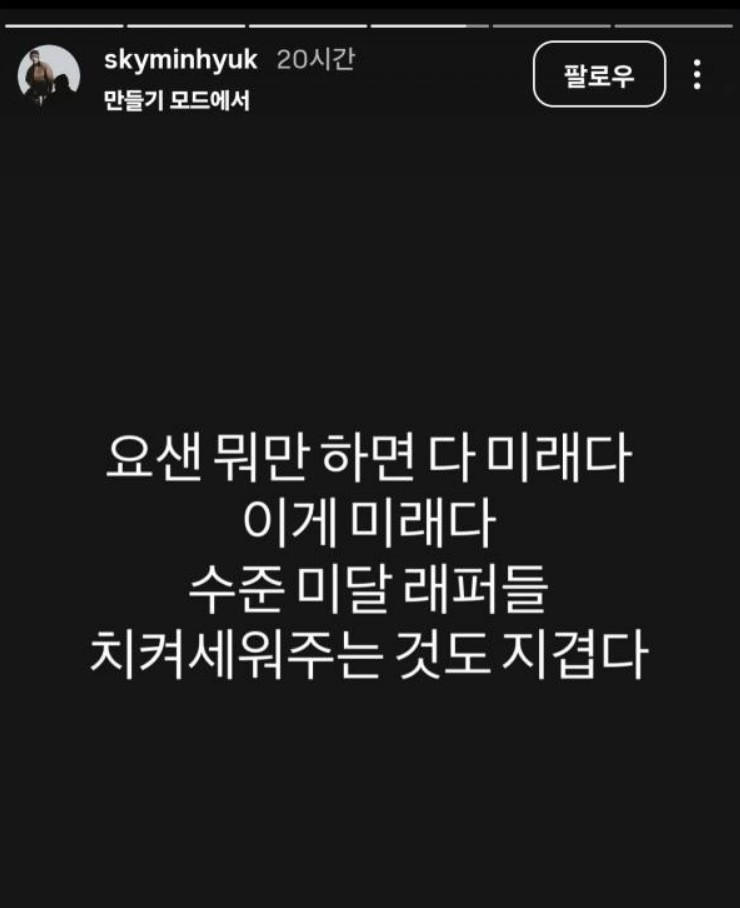
도전과 실패를 긍정하는 곡이라는 점에서도 두 분의 상황과 맞아떨어졌던 것 같아요. "한 번만 더" 다음의 "2 good 2 broke"부터는 두 분의 비판적인 시선이 더 드러나요. 최근 스카이민혁 님이 인스타그램에 올린 스토리와도 이어진다고 생각했어요(웃음).
스카이민혁 실력은 그닥인데 ‘앞으로 잘될 신예’, ‘미래를 이끌 사람’으로 언급되는 경우를 봤어요. 제가 군대에 있는 동안 그런 사람들이 많이 나타났다가 사라졌죠. 소비하는 입장에서도 짜증이 나요.
오도마 응원하고 있는데 갑자기 사라지고(웃음).
스카이민혁 앨범에도 그런 내용을 담았으니 어그로도 끌고 싶었고, 마침 짜증 나는 글도 많이 보여서 그렇게 스토리를 올렸어요. 다른 분들은 어떻게 생각할지 모르지만, 저는 2014년부터 2019년까지 힙합을 정말 즐겁게 들었어요. 좋은 앨범도 많이 나왔고, 제 짧은 경험에서는 그때가 가장 좋았죠. 그 시기처럼 활동하고 싶어요. 그러다 보니 요즘 나오는 기형적이거나 새로운 음악 중에는 달갑지 않은 것도 있어요. 웃기려고 하는데 저질스럽고, 심지어 웃기지도 않아요. 다들 웃기다는데 저는 그렇게 웃긴지 모르겠고요. 랩도 대충 하는데 잘하려는 마음조차 안 보여요. 음악 하는 사람이 음악을 잘하려는 마음이 없으면 어떻게 소비하겠어요.
그래서 더 공격적이고 날카롭게 얘기해야 그런 사람들과 저의 결이 구분된다고 생각한거죠. MC라면 어떻게 해야 하는지 제 생각을 제대로 표현해야 듣는 분들도 구분할 수 있겠다고 생각하고요. 솔직히 그런 분들을 디스리스펙트하지 않을 수가 없어요. 저는 랩을 늘 잘해야 한다고 생각해요. 목소리를 악기로 쓰는데 그 악기를 다루지 못하고 이상한 소리를 내는 걸 웃기다고 소비한다면, 정말 음악을 진지하게 듣고 있는 걸까요? 예전에 음이탈하면서 노래하는 개그 코너가 있었잖아요. 그런 건 개그로서의 예술이지만, 음악으로서 듣기 좋은 건 아니잖아요. 그런 부분을 더 고민했으면 하는 마음이었죠,
초반부가 ‘어떻게 둘이 앨범을 잘 만들어서 뜰 수 있을까’라면, 중반부는 ‘음악을 하는 이유를 돌아보는’ 과정으로 들렸어요. 오도마 님은 이 곡에 어떤 이야기를 담으셨나요?
오도마 이 음반은 좌절에서 시작했어요. 어떻게 잘할 수 있을까, 어떻게 잘될 수 있을까 고민한 거죠. 처음에 저희 상황을 멀리서 보자는 이야기는 "한 번만 더"에서 일단 끝나요. 실패해도 다시 해보자는 결론에 이르는 거죠. 다음 스텝으로 ‘한 번 더 한다면 뭘 할 수 있을까’ 생각했을 때 2MC가 할 수 있는 건’ MC다운 모습을 보여주는 것’이었어요. 요즘은 그런 모습을 보기 어렵다고 생각해요. 제가 생각하는 MC와 어린 친구들이 생각하는 MC의 개념이 다르기도 하고요.
예전에 미국에서 Lil Uzi Vert가 Tupac이나 The Notorious B.I.G. 같은 이전 세대의 음악을 듣지 않는다는 취지로 얘기해서 논란이 됐잖아요. 라디오에서도 토론도 일었고 유명한 래퍼들도 비판했죠. 뿌리를 몰라서는 안 된다는 취지였어요. 저는 Lauryn Hill의 [The Miseducation of Lauryn Hill]이나 Fugees를 좋아해서 가끔 꺼내 들어요. 상징적인 음반이잖아요. 힙합 아티스트가 차트를 석권하고 그래미에서도 많은 상을 받았다는 점에서도요. 내용도 좋아요. 흑인 사회에 건강한 메시지를 던지죠.
공격적이고 날것의 힙합을 듣다가 그런 음반이 필요할 때가 있어요. 개인적으로 치유를 받는 거죠. 그런 걸 알면 ‘20세기 출생들은 이제 좀 꺼지’라는 가사를 쉽게 쓰기 어렵다고 생각해요. 모르고, 알 필요도 없다고 생각하니까 과감히 말하는 것 같아요. MC는 리스크를 많이 지는 사람이라고 생각해요. AR에 의존하지 않고 원테이크로 뱉는 고전적인 방법을 고수하니까, 공연에서 못하면 못하는 대로 욕먹고 잘하면 칭찬받죠. 정말 날것이에요. 그런데 요즘은 공연도 음반도 날것인 척하는 경우가 있잖아요. 그걸 그대로 보여줄 수 있는 곡이 "2 good 2 broke"였어요. 특정한 한 사람을 가리켜 별로라고 하는 게 아니라 씬 전체에 던지는 얘기예요. 듣고 뜨끔하다면 그 사람이 풀어야 할 숙제죠.
나다 싶으면 알아서 하라는 거군요(웃음).
오도마 네. 디스 걸고 싶으면 걸어도 돼요. 열어두겠어요. 그런데 아마 아무도 반응하지 않을 거예요. 요즘은 반응하면 손해라고 생각하니까요. 엔터테인먼트가 아니라 철저하게 손익을 따져요. 내가 참여하면 상대는 이익이고 나는 손해니까 하지 말자, 철저히 비즈니스인 거죠. 예전에는 기분이 상하면 드러냈잖아요. 폭로가 아니라 스킬로 맞붙는 배틀이 있었어요. 요즘은 그런 게 짜치거나 손해라고 생각하는 것 같아서 재미가 떨어진 것도 사실이에요. 어쨌든 저희는 할 얘기를 했으니 나머지는 듣는 분들 몫이죠.
요즘은 래퍼, 슈퍼스타, 록스타, 팝스타라고 부르지 자신을 MC라고 하는 경우가 많지는 않죠. 스카이민혁 님이 생각하는 MC는 어떤 존재인가요?
스카이민혁 저는 바스코 선배님의 곡을 통해 처음 그 단어를 접했어요. 그분이 생각하는 MC를 가사로 들은 거죠. 그전에는 MC 하면 유재석 같은 사회자가 떠올랐거든요. 래퍼들이 이름 앞에 붙이기도 하니까 헷갈렸죠. 마이크라는 뜻인가? 싶기도 했고요. 지금은 그런 걸 다 제쳐두고, 계산하지 않고 쓰고 싶은 가사를 거리낌 없이 쓰는 사람이라고 생각해요. 무대가 크든 작든 최선을 다해서 자기 목소리를 마이크에 담는 사람은 모두 MC가 될 수 있고, 그런 사람에게 MC라는 말을 붙일 수 있다고 봐요. 그런 기준에서는 치트키같은 래퍼도 MC라고 생각해요. 저와 전혀 다른 음악을 하는 래퍼지만 자기만의 말을 뱉잖아요. 다만 음반을 만들 때 더 솔직했으면 좋겠어요. 있는 그대로 표현했으면 해요. 남의 음반을 따라 하거나 그럴듯하고 있어 보이게만 쓰는 걸 많이 봤어요. 어디서 주워들은 듯한 영어 가사도 많고요. 정작 본인은 그 문제에 관심이 없고 잘 모르기도 하죠.
오도마 저도 동의하고, 우리가 하는 말에는 힘이 있다는 것도 알았으면 좋겠어요. 그 영향력을 가볍게 보지 않았으면 해요. MC가 하고 싶은 말을 하는 건 맞지만, 해야 할 말과 하지 말아야 할 말을 구분할 줄도 알아야죠. 사회와 문명 안에서 살고 있다는 걸 어느 정도 인지해야 한다고 생각해요. ‘음악이니까 이래도 되는 거 아니야?’라고 생각할 수는 있어요. 그게 틀렸다는 건 아니지만, 여파와 영향력도 감안해야 한다고 봐요.
MC는 언어로 생각을 전달하니까 더 적나라하게 드러나는 것 같아요. 말이 길어지면 그 사람이 평소에 뭘 생각하는지, 어떠한 유머감각과 센스를 가지고 있는지, 어떤 지식을 갖고 있는지가 드러나잖아요. 하고 싶은 말을 하면서도 진실하게 전달하는 게 중요하겠죠.
오도마 저는 힙합에서 많이 배웠어요. 10대 후반과 20대에 참된 어른의 모습을 많이 보지 못했는데, 힙합 가사를 보면서 울고 웃었어요. ‘멋있다. 저렇게 되고 싶다’고 생각했죠. 그런데 요즘 어린 친구들의 모습을 보면 그렇게 되고 싶지 않을 때가 있어요. 잘하고 못하고의 문제가 아니라 그렇게 살지는 않았으면 하는 거예요. 제 딸이 태어나서 그런 힙합은 듣지 않았으면 좋겠어요. 반면 제 음악은 들었으면 하지만요(웃음).
제가 사랑했던 힙합은 저를 성장시킨 음악이에요. 힙합이 돈과 여자 이야기뿐이라고 말하는 건 만화책만 보고 정치, 시사, 인문학까지 다 읽은 것처럼 말하는 것과 같다고 생각해요. 책의 범위가 얼마나 넓은데, 일부만 읽고 책은 이래야 한다고 말할 수 없잖아요. 가볍게 즐길 것도 있고 깊이 들여다볼 것도 많아요. 다른 음악 장르에 비하면 반세기 정도의 역사지만 그 안은 정말 넓어요. 우리는 한국 힙합이나 미국 힙합만 생각하기 쉬운데, 이탈리아에 가보니 완전히 다른 힙합을 하더라고요. 음악도 결이 달랐어요. 힙합이라는 문화와 장르는 생각보다 넓어요. 너무 한 가지로 정해서 보지 않았으면 해요. 저도 제가 생각하는 힙합이 있을 뿐, 그게 전부라고는 생각하지 않아요. 듣는 분들도 ‘이렇게 다양하게 즐길 수 있구나’ 하고 받아들이면 더 재밌을 것 같아요.
"I am 신뢰"는 처음에 허구라고 말하지만 어느 정도 실화 같기도 해요. 오도마 님의 이야기는 앞서 말씀하신 내용과 연결되고, 스카이민혁 님은 "촛불"의 비하인드를 풀어내셨죠.
스카이민혁 이 이야기가 진짜인지 허구인지의 여부는 사람들이 즐기는 요소로 남겨두고 싶어요. 제가 이걸 직접 말하면 곡이 전달하고자 하는 바를 파괴하는 행동이 될 것 같아요. 그걸 알 수 없기에 의미가 있는 곡이고, 사실 진짜인지 가짜인지는 중요하지 않아요.
오도마 아웃트로에도 나오잖아요. 이 앨범에서 다루는 것은 진짜와 가짜를 가르는 싸움이 아니에요. 그동안 ‘쟤는 가짜다’, ‘쟤는 진짜다’, ‘힙합이다, 아니다’ 나누는 데 너무 매몰됐던 것 같아요. 지금은 진위보다 재미가 더 중요하게 여겨지는 시대라고 생각해요. 심지어 재미만 있으면 범죄까지 용인되는 것처럼 느껴질 때도 있어서 안타깝기도 하지만요. 그만큼 재미가 중요해졌으니 이 곡은 즐기는 요소로 남겨두는 게 좋겠어요.
제목과 모티브, 허구라는 안내까지 사실과 허구가 섞인 곡이죠. 한편 "촛불"을 공개했을 때는 반향이 컸잖아요. 당시에는 어떻게 느끼셨나요?
스카이민혁 "촛불"은 어릴 때부터 느꼈던 마음을 담은 곡이에요. 힙합을 좋아하는 팬이라면 누구나 머리나 가슴에 품고 있는 생각 같아요. 힙합 하는 사람과 좋아하는 사람이 뭉쳐서 나아가자, 서로 혐오하기보다 좋은 음악을 만드는 데 집중하자는 말이죠. 누구나 할 수 있고 좋아할 만한 얘기예요.
그런데 말에는 상황과 시기가 중요하잖아요. 제가 <쇼미더머니 9>가 막 끝나고 "촛불"을 공개했다면 아무도 들어주거나 관심을 가지지 않았을 거예요. 랩도 못하는 네가 뭘 했는데?라고 했겠죠(웃음). [해방] 직후였기 때문에 말에 힘이 생겼다고 생각해요. 대통령이 할 수 있는 말, 시민이 할 수 있는 말, 베테랑이나 범죄자가 할 수 있는 말이 다 다르잖아요. 사람들이 지지해 줘서 고마웠지만, 이렇게 지지하는 사람이 많은데 왜 힙합은 아직 이 모양일까 하는 씁쓸함도 있었어요.
그런 생각이 이번 앨범 중반부 메시지와도 이어지는군요. 말하는 사람은 같은데 그 사람의 배경을 어떻게 보느냐에 따라 말의 무게가 달라진다는 게 아이러니하기도 해요. 나는 그대로인데 받아들이는 쪽의 시선이 변하는 거니까요.
스카이민혁 그래서 더욱 열심히 음악해서 사람들에게 좋은 메시지를 많이 전하고 싶어요.
오도마 저는 좋은 메시지가 꼭 ‘세상은 아름답습니다’처럼 꾸민 얘기라고는 생각하지 않아요. ‘있는 그대로의 세상을 보여주는 것’이 좋은 메시지라고 생각해요. 세상을 보는 눈은 모두 다르잖아요. 그 차이에서 나오는 메시지가 있고, 그게 예술이라고 봐요. 음악뿐 아니라 영화나 책도 자기 시선과 의견을 사람들과 공유하죠. 그런 생각이 부딪히면서 무엇이 합리적인지 찾아가고 문명도 발전한다고 생각해요.
반대로 ‘넌 구려. 난 짱이야. 모르겠고 난 짱이야’ 하고 답을 정해 놓으면 거기서 더 생각할 게 없어요. 그런 음악은 한 번 듣고 마는 것 같아요. 저를 생각하게 만들고, 감정에 뛰어들게 하고, 힘든 순간에도 일으켜 세워주는 음악에 더 애정이 가요. 저도 자연스럽게 그런 음악을 만드는 것 같고요.
공격적인 말이 있더라도 두 분이 보고 느끼는 걸 그대로 말하려는 거군요. 그런 의미에서 "특수기호"의 오도마 님 벌스가 여러 곳에서 화제가 됐어요.
오도마 처음부터 특정 누군가를 디스하려고 만든 곡은 아니에요. 말 그대로 "특수기호"죠. 저나 민혁이가 사는 방식이 요즘 친구들과 다르다고 느꼈어요. 삶도, 생각도, 음악을 만드는 방식도요. 저희가 만나면 민혁이 결혼이나 결혼식, 적금 같은 계획을 얘기해요. 20대 후반, 30대가 되면서 고민하는 현실적인 문제들이죠. 저는 결혼을 했으니 민혁이와 계속 작업하니까 자연스럽게 그런 얘기를 하게 돼요.
요즘 어린 친구들을 직접 만나본 건 아니지만 음악을 들으면 저희와 생각하는 방식이 다른 것 같아요. 저희는 그렇게 음악에 접근하지 않거든요. 그쪽에서는 저희를 재미없는 아저씨나 꼰대라고 부를 수 있겠죠. 그런데 그걸 바꿔서 생각해 봤어요. 저는 일반 대중과 맞닿아 있는 평범한 사람인데, 힙합 신에서는 오히려 그런 사람이 별로 없어 보이는 거예요. 그러면 ‘특수기호 같은 성질을 가진 래퍼’가 아닐까 싶었죠. 제가 안 하거나 할 수 없는 행동들을 나열하면서 ‘그건 내 소행이 아니야’라고 말한 거예요.
스카이민혁 님의 벌스에는 건실한 삶에 관한 이야기가 담겨 있어요. 통념적인 래퍼들의 삶과는 다른 일상이죠.
스카이민혁 어머니가 스무 살까지 저를 키우면서 늘 ‘정직해라, 솔직해라’고 가르치셨어요. 거짓말하면 정말 호되게 혼났어요. 거짓말하다 엄청 맞았던 기억도 있고요(웃음). 그래서 거짓말하면 안 된다는 게 몸에 밴 사람이 됐고, 음악에서도 더 솔직해질 수 있었던 것 같아요. 그리고 향락적인 삶은 저와 거리가 있어요. 하지만 힙합에서는 그런 문화가 큰 부분을 차지하고, 외국 힙합을 듣고 자란 래퍼들도 그런 얘기를 하게 되는 게 아이러니하다고 느껴요.
한국은 교육열도 높고, 교육이나 의료 같은 여건도 좋잖아요. 저는 그런 환경에서 배우고 건강하게 살 수 있다는 데 자부심이 있어요. 다른 래퍼들이 더 솔직해지지 못하는 부분에서 저는 솔직해지고 싶었고, "특수기호"에서는 그걸 강조하고 싶었어요. 저는 명품보다 여자친구가 더 소중해요. 많은 여자를 만나는 걸 멋있다고 얘기하기보다, 공연 끝나고 집에 가서 여자친구와 맛있는 음식을 먹는 게 큰 행복이에요. 그래서 그걸 가사로 쓴거죠. 대부분의 사람은 엄마랑 밥 먹고 여자친구랑 데이트하면서 산다고 생각해요. 마약을 하거나 클럽에서 원나이트 하는 건 정말 소수의 삶이잖아요. 그런 래퍼들과 다른 점이라면 저는 지극히 평범하다는 거예요.
오도마 그렇다고 너를 래퍼라고 안 부르는 건 아니잖아. 너도 래퍼가 맞지. 래퍼의 세상 밖에서는 다들 우리처럼 사는데, 그 안에서만 보면 우리가 독특한 존재가 되는 거야.
외눈박이 마을에 있는 두 눈 가진 사람처럼(웃음).
오도마 맞아요. 그런 느낌.
스카이민혁 래퍼라고 여러분과 크게 다르지 않고, 저희도 자기 삶에 충실하게 건강히 살려고 노력한다는 걸 얘기하고 싶어요.
오도마 찾아보면 저희 같은 래퍼도 많아요. 저희처럼 드러내지 않았을 뿐 생각보다 많죠.
힙합이나 R&B에도 건실하게 살면서 좋은 음악을 하는 분들이 많죠. 그런 음악가들도 더 소개할 수 있도록 노력해 보겠습니다. "특수기호"에서는 아프로 리듬을 차용했고, 요즘 이쪽 분야에서 핫한 팩님도 함깨했죠.
오도마 와이프와 저는 음악 취향이 비슷한 부분도, 다른 부분도 있어요. 아프로 음악을 잘 몰랐는데 와이프를 통해 Rema도 알게 됐어요. 그러다 TEXTED에 그분이 나온 걸 봤는데, 한국인이라는 게 놀랄 정도로 인상 깊었어요. 정말 대단한 뮤지션이라고 생각했죠. 지금 국내에서도 아프로 신이 점차 성장하고 있잖아요. 그 자체가 특수기호 같았던 거죠. 아프로 음악은 힙합과 연관을 지을 수 있으면서도 다른 갈래의 음악이잖아요. 2MC라는 팀에서는 이런 시도를 해볼 수 있겠다고 생각했어요. 다만 둘이서만 하기에는 부족하니 그 뿌리를 이해하는 아티스트의 도움이 필요했죠. 저희에게 곡에 다른 언어를 써도 되느냐고 물으셔서 원하는 대로 다 하셔도 된다고 했어요. 정말 멋있었어요.
다음 트랙인 "FOMF"는 앨범 안에서 조금 이질적으로 느껴졌어요. 서사적으로 메타픽션적인 느낌?
오도마 민혁이가 작업하다가 ‘형, 우리 너무 엔터테인먼트적으로만 앨범을 만들고 있는 것 같다. 우리 강점은 자전적인 얘기니까 서정적인 비트에 그런 얘기를 하는 곡도 있으면 좋겠다’고 의견을 줬어요. 그래서 한 번 만들어보자고 했고, 만들어 온 걸 들었는데 훅이 좋은 거예요. 살려보자고 하고 가짜인간과 비트를 새로 만들어 민혁이 랩에 맞게 편곡했죠.
그런데 그대로 싣기는 앨범의 컨셉상 살짝 어려운 주제여서 어떻게 이걸 녹여낼지 고민했어요. 그래서 ‘우리 이런 얘기 하지 않기로 했잖아’를 주제로 뒤집었어요. 이야기에 몰입하려는 순간을 한 번 더 깨는 거죠. 그것조차 연출이에요. 제 벌스에서 이걸 그대로 말해요. 처음 들었을 때 훅이 좋았고, 너한테 개인적인 얘기를 하지 말자고 말한 나 역시 내 얘기를 풀어버렸다고. 결국 진짜와 가짜가 중요한 게 아니라 진짜라는 말도 거짓이 있어야 의미를 갖는다는 얘기가 됐어요.
앞서 "I am 신뢰"에 관해 말씀하신 것과도 이어지네요.
오도마 맞아요. 결국 재미있어야 해요. 저는 [선전기술 X]도, [밭]도, [해방]도 재미있는 음반이라고 생각해요. 하지만 제가 재밌는 부분을 다른 사람은 그렇게 느끼지 않을 수도 있죠. 이번 [2MC]는 좀 더 자신 있게, 모두가 재미있게 들을 수 있지 않을까 생각해요.
스카이민혁 님이 데모를 만들어 오셨다고 했죠. 벌스가 앨범의 다른 부분과는 다르게 느껴졌는데, 어떤 마음으로 쓰셨나요?
스카이민혁 이혼한 아버지가 보험회사에 입사하고 저를 포함해 엄마와 동생에게 보험 가입을 권하셨던 적이 있는데 기분이 굉장히 좋지 않았어요. 차라리 용돈을 달라고 하셨다면 흔쾌히 드릴 수 있는데, 가족에게 장사하려는 것처럼 느껴져서 피로했던 거죠. 한두 번이 아니었거든요. 저는 이런 일들이 너무 피로하지만 사실 이것도 제 삶이에요. 이런 속상한 일들을 음악으로 담지 않으면 안 될 지경까지 가니까요.
이번 앨범에서 돈을 많이 벌고 성공하려는 분명한 이유도 좋은 가정을 꾸리고 싶다는 거라고 생각해요. 어떤 얘기를 해도 결국 거기로 가더라고요. 가정에서 돈 때문에 느끼는 피로감, 그래서 <1박 2일> 같은 큰 프로그램에 고정 출연하고 싶을 만큼 돈을 벌고 싶은 마음이 있었어요. 친구나 동료보다 지금은 돈을 벌고 싶다는 마음을 써서 형에게 가져갔죠. 곡은 괜찮은데 앨범에 어떻게 넣을지를 고민하셨죠. 가볍고 즐거운 얘기를 하고 클럽에서 틀 만한 곡을 만드는 방향으로 앨범이 짜였으니까요. 그러다가 형이 이 곡 넣고 싶으면 알아서 이어보겠다고 하신 거죠.
오도마 그게 제 강점이니까요(웃음). 민혁이는 창의적인 친구예요. <랩:퍼블릭> 때 쿤디판다와 대결한 무대가 기억나요. 복현이 너무 잘하는 래퍼잖아요. 그런데 평가하는 사람들도 래퍼이고, 계속 랩을 듣고 판단해야 하는 상황이라 꽤 피로한 상태였어요. 수준 높은 래퍼들을 모아 놓으니 웬만큼 잘하는 것만으로는 어필하기 어려웠죠. 방송에서 어떻게 편집됐는지는 제가 방송을 안 봐서 모르지만, 실제로는 거의 첫 경기였어요. 참고할 데이터가 없었죠. 그런데 복현이 랩을 듣고 민혁이가 ‘랩 대 랩으로 붙으면 어려울 수도 있겠다’고 직감했는지 갑자기 무대 아래로 내려가 호응을 유도하더라고요. 그때 엄청난 리스펙트가 생겼어요. 무대 아래로 내려가 사람들의 인식을 바꾸는 건 용기도 재능도 필요한 일이에요. 상황을 보고 즉각 판단해서 동물적으로 움직인 거죠. 앨범을 만들 때도 그런 직감을 최대한 끌어내려고 했어요. 저는 그걸 정리하는 역할을 잘하니까.
이어지는 “2MC”는 굉장히 Raw해지죠.
오도마 선배님들이 예전에 활동하지 않으셨다면 저희도 이런 그림을 만들 수 없었을 거예요. 예전에 2MC가 있었다는 걸 알고 나서 바로 생각났어요. 한국에 힙합 듀오가 정말 많잖아요. 그 듀오들의 노랫말을 가져와서 2MC에 대한 트리뷰트 트랙을 만들면 좋겠다고요. 사실 이 곡도 원래 제목은 “2MC”가 아니라 “아포페니아”였어요.
아, 이 곡이 원래 “아포페니아”였나요?
오도마 이 곡은 가사를 새로 썼다기보다 서로 관계가 없던 듀오들의 가사에서 한 대목씩 가져와 하나의 가사로 이어낸 거잖아요. 그것도 하나의 아포페니아처럼 느껴져서 그렇게 제목을 붙였죠. 그런데 민혁이가 “형, 이건 스킷 같은 곡이니까 그냥 ‘2MC’로 가고, ‘아포페니아’는 아웃트로로 가면 좋겠다”고 의견을 주더라고요. 그래서 지금처럼 된 거예요.
마치 폰 녹음기 켜두고 두 분이 랩을 주고받는 것처럼 들려요. 날것의 현장감 때문에 휴대폰 녹음 버튼을 켜놓고 “야, 뱉어보자” 해서 나온 곡인 줄 알았거든요(웃음).
오도마 딱 그렇게 생각하시게끔 연출했죠(웃음). 요즘은 플러그인이 좋아서 스튜디오에서 녹음해도 이펙트를 걸어서 이런 라이브 느낌을 낼 수 있어요. [밭]에서도 그런 작업을 많이 했거든요. 직접 받으면 소스가 좀 더러워요. 현장 소리도 들리고 노이즈도 끼니까요. 그런데 거기에 샘플로는 안 나오는 바이브가 있어요. 특히 이런 스킷 트랙을 만들 때 훨씬 좋더라고요. 가짜인간 형들이랑 드럼 세트를 같이 만들고 그걸 가져와서 민혁이랑 랩을 주고받으며 녹음하고, 여기에 이펙트를 더했죠. 듣는 분한테는 녹음본을 듣는다기보다 바로 거기서 랩을 듣는 느낌이 나도록 믹스했어요.
그 현장감을 후처리로 살린 거네요.
스카이민혁 형이랑 저랑 마이크 하나를 사이에 두고 얼굴을 마주 봤어요. 제가 랩을 끝내면 형이 쑥 들어오고요.
오도마 <어벤져스>의 CG라고 생각하시면 돼요. 세트장에서 찍어 놓고 지구를 지키는 장면을 만드는 거죠.
마지막 곡 "아포페니아"는 앨범의 대단원이에요. 다른 음악가들과의 일화가 연결되면서 핵심 메시지에 도달하는 과정도 재미있었어요. 일부는 팔로알토 님이나 저스디스 님을 향한 디스로 받아들이기도 했는데, 단순히 그렇게 보기는 어려운 것 같아요.
오도마 누구나 자기 생각에 맞춰 받아들이는 면이 있잖아요. 그런 얘기를 허심탄회하게 하면서 이 음반도 그렇게 만들어진 게 아닌가 생각했어요. 힙합씬이 망했다고 생각하다가 디스전이 벌어지면 다시 부흥하는 것 같고, 사람들이 관심을 주는 것 같고요. 혼자 ‘힙합 신이 죽어 있어야 이 음반 콘셉트가 맞는데’ 하고 노심초사하는 거죠. 사실 그 상황과 제 음반의 흥망성쇠가 직접 연결된 것도 아닌데 상상의 나래를 펴는 거예요.
그 과정에서 결국 깨달은 건 제 마음을 다스리는 일이 중요하다는 것이었어요. 마음을 다스리고 나니까 우연이었지만 필연처럼 원하는 일이 이루어지더라고요. 조급해하지 않고, 말로 스스로 무너뜨리지 않고, 열심히 하고 있으면 어떻게든 되더라고요. 조급해하지 말자. 어떻게든 또 무대가 준비되겠지. 그런 마음을 담았어요.
스카이민혁 님은 이 곡을 만들면서 얻거나 깨달은 게 있나요?
스카이민혁 처음에는 저도 벌스를 쓰려고 했어요. 그런데 형 벌스를 들어봤는데도 어떻게 써야할 지 어렵게 다가오더라고요. 그러니까 오도마 형이 제가 "서울은 가르쳐줬지" 같은 훅을 잘 만든다며 대신 훅을 써보라고 했어요. 저는 이게 음악을 만들면서 생기는 일이지만 음악가만 겪는 일은 아니라고 생각했거든요. 직장에서도 나보다 잘나가는 사람이 있고, 내 프로젝트가 다른 사람에게 갈 수도 있잖아요.
동대장님도 떠올랐어요. 정말 엘리트 군인이셨는데 소령에서 중령으로 진급해야 경력을 이어갈 수 있던 시기에 정책 등이 바뀌어 밀려났다고 말씀하셨어요. 본인은 열심히 했는데 누군가나 어떤 일 때문에 그렇게 됐다고 생각하셨죠. 지금도 동대장이라는 안정적인 직업이 있지만 중령, 대령이 됐다면 훌륭한 군인으로 계속할 수 있었을 텐데 하고요. 저는 동대장님이 정말 프로페셔널한 군인이라는 걸 알고 존경해서 아쉬웠어요. 개인적으로는 훅에 그분을 향한 마음도 담고 싶었어요. 그렇게 고군분투하는 모든 사람을 응원하는 마음으로 만들었죠.
그래서 이 곡은 앨범에서 가장 마지막에 작업한 곡이기도 해요. 음반을 만들면서 정말 많이 배웠어요. 오도마 형은 랩을 쉽게 뱉는 것처럼 들리지만 실제로는 오랜 시간 고민하고 짜임새를 다듬어서 가사를 쓰는 스타일이에요. 형이 쓴 가사를 제가 뱉어야 할 때가 있었는데 좀체 안 되는 거예요. 저는 음절을 씹으면서 발음하는 걸 좋아하는데, 형은 음절 하나하나를 살리고 길게 늘리면서 그루브를 만들어요. 저는 저도 그렇게 할 수 있는 줄 알았는데 제 랩에 없던 부분이더라고요. 정말 많이 배웠죠.
오도마 저도 많이 배웠어요.
스카이민혁 "아포페니아"를 통해서는 이런저런 얘기도 모두 하나의 이야기가 될 수 있다는 걸 배웠어요. 앨범 전체에서는 형의 랩, 음악, 프로듀싱, 음반을 끌고 가는 방법을 배웠고요. 형이 ‘앨범은 이렇게 만드는 거야’라고 가르친 적은 없지만, 옆에서 몸으로 느꼈어요.
메시지뿐 아니라 만드는 과정에서도 서로 배우고 성장한 시간이었네요. ‘만약 이랬다면 어땠을까’ 하는 이야기는 "에에올"과도 이어져요. 유기적으로 연결된 음반 같아요.
오도마 좋게 봐주시면 그렇죠. 안 좋게 보면 개소리고요(웃음). 뭐든 그렇잖아요. 저희는 할 수 있는 걸 다 했으니 만족해요. 제 경력에서 이렇게 후련한 음반도 드문 것 같아요.
하고 싶은 말을 직설적으로 다 담으셨고, 작업에도 만족하시는군요. 입대 같은 상황을 제외하면 음악적으로는 큰 어려움이 없었나요?
오도마 그 일이 없었다면 다른 어려움이 있었겠죠. 음악적으로도 처음 대여섯 달, 여섯일곱 달 정도는 정말 어려웠어요. 애초에 음악적인 성향이 다르니까요. 민혁이가 만든 곡이 충분히 좋아도 제가 융화되지 못하고, 반대의 경우도 있었어요. 저는 하나부터 열까지 틀을 정해 놓고 만드는 훈련을 해온 사람이에요. 이번에도 기획 회의를 정말 많이 했죠. 그런데 민혁이는 기획에 맞춰 만드는 것보다 그 순간의 감정에 충실해서 만드는 곡이 훨씬 매력적이었어요. 그런 민혁이의 감각과 재능을 최대한 살리고 싶기도 했고요. 저는 그걸 어떻게 돋보이게 만들고, 팀으로 완성했을 때 좋은 그림을 만들 수 있을지 고민했죠. 결과적으로 역할을 잘 나눈 것 같아요. 저는 머리, 스카이민혁은 심장이 되어 이 앨범이 움직이는 것 같습니다.
스카이민혁 저는 형이 생각하는 주제에 맞는 가사를 써야 하는데, 계속 제 생각과 느낌대로 뱉었어요. 제가 재료로 잘 쓰이려면 어떻게 해야 할지 고민했죠. 결국 처음부터 너무 크게 생각하지 않고 원래 하던 방식으로 만들어 드리는 게 가장 퀄리티적으로 좋았어요. 그걸 가짜인간 형들이 프로듀싱하고 도마 형이 마무리하는 식으로 갔죠. 그런 곡들이 앨범에서 분위기를 환기하는 역할을 했고, 제 장점이 거기에 있다는 걸 알았죠. 늘 혼자 음악을 했으니 그런 걸 생각할 기회가 없었거든요. ‘나는 이게 장점이구나. 형이랑 다음 앨범은 더 빨리 만들 수 있겠다’ 싶었어요.
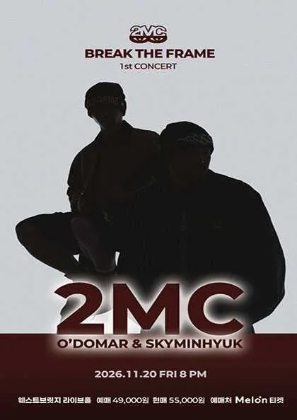
앨범을 마무리하고 공연과 뮤직비디오도 준비하고 계시죠. 앞으로 어떤 걸 보여주실지 소개해 주세요.
오도마 10월 30일에 뮤직비디오 한 편이 더 공개되었고, 11월과 12월에도 나올 예정이에요. 다큐멘터리 콘텐츠도 계속 나오고요. 11월 20일 웨스트브릿지에서 하는 단독 콘서트는 취지에 맞는 스페셜 게스트들과 함께 무대를 꾸밀 예정이에요. 이전 앨범들을 좋아하는 팬분들도 만족하실 수 있도록 각자의 솔로 시간도 철저히 준비하고 있으니 기대해 주세요. 많이 오셔서 즐겨주셨으면 좋겠어요.
콘서트가 매진되면 번지점프를 하신다고 하셨는데(웃음).
오도마 진짜 뛸 계획이에요. 민혁이가 제안한 거예요. 저는 살면서 그런 도전을 해본 적이 없는데 민혁이 덕분에 하게 되길 바랍니다.
스카이민혁 매진만 된다면 화성에서 지구까지 번지점프할 마음도 있어요(웃음). 저희가 준비한 게 정말 많거든요. 매주 월요일마다 함께 라이브 연습하고 회의하면서 더 좋은 공연을 만들 방법을 고민하고 있어요. 실망하지 않을 재미있는 경험, 오래 기억에 남을 추억을 만들어드릴 자신이 있으니 많이 놀러 와주세요.
감사합니다. 인터뷰가 마무리가 되었는데요. HAUS OF MATTERS 독자분들과 팬분들께 마지막 인사 부탁드리겠습니다.
오도마 시간 내주신 HAUS OF MATTERS 편집진께 감사드립니다. 앞으로도 좋은 힙합 소식, 멋있는 힙합 소식 기대할테니까 2MC도 많이 기대해 주세요.
스카이민혁 2MC의 스카이민혁이었습니다. HAUS OF MATTERS에서 인터뷰하게 돼 영광이었고 정말 재밌었어요. 봐주시는 여러분도 한 해 잘 마무리하셨으면 좋겠어요. 좋은 일이든 나쁜 일이든 경험 삼아서 내년에 꽃을 피우시길 응원하겠습니다.
인터뷰에 참여해주신 2MC, 오도마 님과 스카이민혁 님께 감사드립니다!